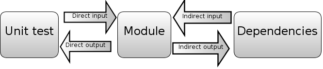

This free book is what I wanted when I started working with single page apps. It's not an API reference on a particular framework, rather, the focus is on discussing patterns, implementation choices and decent practices.
I'm taking a "code and concepts" approach to the topic - the best way to learn how to use something is to understand how it is implemented. My ambition here is to decompose the problem of writing a web app, take a fresh look at it and hopefully make better decisions the next time you make one.
Update: the book is now also on Github.
Introduction
Writing maintainable code
- Maintainability depends on modularity: Stop using namespaces!
- Getting to maintainable
- Testing explained
Implementation alternatives: a look at the options
Meditations on Models & Collections
- Implementing a data source
- Implementing a model
- Implementing a collection
- Implementing a data cache
- Implementing associations
Views - templating, behavior and event consumption
- Templating: from data to HTML
- Behavior: binding DOM events to HTML and responding to events
- Consuming events from the model layer: communication between views and re-rendering views in response to model data changes
1. Modern web applications: an overview
Why do we want to write single page apps? The main reason is that they allow us to offer a more-native-app-like experience to the user.
This is hard to do with other approaches. Supporting rich interactions with multiple components on a page means that those components have many more intermediate states (e.g. menu open, menu item X selected, menu item Y selected, menu item clicked). Server-side rendering is hard to implement for all the intermediate states - small view states do not map well to URLs.
Single page apps are distinguished by their ability to redraw any part of the UI without requiring a server roundtrip to retrieve HTML. This is achieved by separating the data from the presentation of data by having a model layer that handles data and a view layer that reads from the models.
Most projects start with high ambitions, and an imperfect understanding of the problem at hand. Our implementations tend to outpace our understanding. It is possible to write code without understanding the problem fully; that code is just more complex than it needs to be because of our lack of understanding.
Good code comes from solving the same problem multiple times, or refactoring. Usually, this proceeds by noticing recurring patterns and replacing them with a mechanism that does the same thing in a consistent way - replacing a lot of "case-specific" code, which in fact was just there because we didn't see that a simpler mechanism could achieve the same thing.
The architectures used in single page apps represent the result of this process: where you would do things in an ad-hoc way using jQuery, you now write code that takes advantage of standard mechanisms (e.g. for UI updates etc.).
Programmers are obsessed with ease rather than simplicity (thank you Rich Hickey for making this point); or, what the experience of programming is instead of what the resulting program is like. This leads to useless conversations about semicolons and whether we need a preprocessor that eliminates curly braces. We still talk about programming as if typing in the code was the hard part. It's not - the hard part is maintaining the code.
To write maintainable code, we need to keep things simple. This is a constant struggle; it is easy to add complexity (intertwinedness/dependencies) in order to solve a worthless problem; and it is easy to solve a problem in a way that doesn't reduce complexity. Namespaces are an example of the latter.
With that in mind, let's look at how a modern web app is structured from three different perspectives:
- Architecture: what (conceptual) parts does our app consist of? How do the different parts communicate with each other? How do they depend on each other?
- Asset packaging: how is our app structured into files and files into logical modules? How are these modules built and loaded into the browser? How can the modules be loaded for unit testing?
- Run-time state: when loaded into the browser, what parts of the app are in memory? How do we perform transitions between states and gain visibility into the current state for troubleshooting?
A modern web application architecture
Modern single page apps are generally structured as follows:

More specifically:
Write-only DOM. No state / data is read from the DOM. The application outputs HTML and operations on elements, but nothing is ever read from the DOM. Storing state in the DOM gets hard to manage very quickly: it is much better to have one place where the data lives and to render the UI from the data, particularly when the same data has to be shown in multiple places in the UI.
Models as the single source of truth. Instead of storing data in the DOM or in random objects, there is a set of in-memory models which represent all of the state/data in the application.
Views observe model changes. We want the views to reflect the content of the models. When multiple views depend on a single model (e.g. when a model changes, redraw these views), we don't want to manually keep track of each dependent view. Instead of manually tracking things, there is a change event system through which views receive change notifications from models and handle redrawing themselves.
Decoupled modules that expose small external surfaces. Instead of making things global, we should try to create small subsystems that are not interdependent. Dependencies make code hard to set up for testing. Small external surfaces make refactoring internals easy, since most things can change as long as the external interface remains the same.
Minimizing DOM dependent-code. Why? Any code that depends on the DOM needs to be tested for cross-browser compatibility. By writing code in a way that isolates those nasty parts, a much more limited surface area needs to be tested for cross-browser compatibility. Cross-browser incompatibilities are a lot more manageable this way. Incompatibilities are in the DOM implementations, not in the Javascript implementations, so it makes sense to minimize and isolate DOM -dependent code.
Controllers must die
There is a reason why I didn't use the word "Controller" in the diagram further above. I don't like that word, so you won't see it used much in this book. My reason is simple: it is just a placeholder that we've carried into the single page app world from having written too many "MVC" server-side apps.
Most current single page application frameworks still use the term "Controller", but I find that it has no meaning beyond "put glue code here". As seen in a presentation:
"Controllers deal with adding and responding to DOM events, rendering templates and keeping views and models in sync".
WAT? Maybe we should look at those problems separately?
Single page apps need a better word, because they have more complex state transitions than a server-side app:
- there are DOM events that cause small state changes in views
- there are model events when model values are changed
- there are application state changes that cause views to be swapped
- there are global state changes, like going offline in a real time app
- there are delayed results from AJAX that get returned at some point from backend operations
These are all things that need to be glued together somehow, and the word "Controller" is sadly deficient in describing the coordinator for all these things.
We clearly need a model to hold data and a view to deal with UI changes, but the glue layer consists of several independent problems. Knowing that a framework has a controller tells you nothing about how it solves those problems, so I hope to encourage people to use more specific terms.
That's why this book doesn't have a chapter on controllers; however, I do tackle each of those problems as I go through the view layer and the model layer. The solutions used each have their own terms, such as event bindings, change events, initializers and so on.
Asset packaging (or more descriptively, packaging code for the browser)
Asset packaging is where you take your JS application code and create one or more files (packages) that can be loaded by the browser via script tags.
Nobody seems to emphasize how crucial it is to get this right! Asset packaging is not about speeding up your loading time - it is about making your application modular and making sure that it does not devolve into a untestable mess. Yet people think it is about performance and hence optional.
If there is one part that influences how testable and how refactorable your code is, it is how well you split your code into modules and enforce a modular structure. And that's what "asset packaging" is about: dividing things into modules and making sure that the run-time state does not devolve into a mess. Compare the approaches below:
Messy and random (no modules)
|
Packages and modules (modular)
|
The default ("throw each JS file into the global namespace and hope that the result works") is terrible, because it makes unit testing - and by extension, refactoring - hard. This is because bad modularization leads to dependencies on global state and global names which make setting up tests hard.
In addition, implicit dependencies make it very hard to know which modules depend on whatever code you are refactoring; you basically rely on other people following good practices (don't depend on things I consider internal details) consistently. Explicit dependencies enforce a public interface, which means that refactoring becomes much less of a pain since others can only depend on what you expose. It also encourages thinking about the public interface more. The details of how to do this are in the chapters on maintainability and modularity.
Run-time state
The third way to look at a modern single page application is to look at its run-time state. Run time state refers to what the app looks like when it is running in your browser - things like what variables contain what information and what steps are involved in moving from one activity (e.g. page) to another.
There are three interesting relationships here:
URL < - > state Single page applications have a schizophrenic relationship with URLs. On the one hand, single page apps exist so that the users can have richer interactions with the application. Richer activities mean that there is more view state than can reasonably fit inside a URL. On the other hand, we'd also like to be able to bookmark a URL and jump back to the same activity.
In order to support bookmarks, we probably need to reduce the level of detail that we support in URLs somewhat. If each page has one primary activity (which is represented in some level of detail in the URL), then each page can be restored from a bookmark to a sufficient degree. The secondary activities (like say, a chat within a webmail application) get reset to the default state on reload, since storing them in a bookmarkable URL is pointless.
Definition < - > initialization Some people still mix these two together, which is a bad idea. Reusable components should be defined without actually being instantiated/activated, because that allows for reuse and for testing. But once we do that, how do we actually perform the initialization/instantiation of various app states?
I think there are three general approaches: one is to have a small function for each module that takes some inputs (e.g. IDs) and instantiates the appropriate views and objects. The other is to have a global bootstrap file followed by a router that loads the correct state from among the global states. The last one is to wrap everything in sugar that makes instantiation order invisible.
I like the first one; the second one is mostly seen in apps that have organically grown to a point where things start being entangled; the third one is seen in some frameworks, particularly with regards to the view layer.
The reason I like the first one is that I consider state (e.g. instances of objects and variables) to be disgusting and worth isolating in one file (per subsystem - state should be local, not global, but more on that later). Pure data is simple, so are definitions. It is when we have a lot interdependent and/or hard-to-see state that things become complicated; hard to reason about and generally unpleasant.
The other benefit of the first approach is that it doesn't require loading the full application on each page reload. Since each activity is initializable on its own, you can test a single part of the app without loading the full app. Similarly, you have more flexibility in preloading the rest of the app after the initial view is active (vs. at the beginning); this also means that the initial loading time won't increase proportionately to the number of modules your app has.
HTML elements < - > view objects and HTML events < - > view changes
Finally, there is the question of how much visibility we can gain into the run time state of the framework we are using. I haven't seen frameworks address this explicitly (though of course there are tricks): when I am running my application, how can I tell what's going on by selecting a particular HTML element? And when I look at a particular HTML element, how can I tell what will happen when I click it or perform some other action?
Simpler implementations generally fare better, since the distance from a HTML element/event to your view object / event handler is much shorter. I am hoping that frameworks will pay more attention to surfacing this information.
This is just the beginning
So, here we have it: three perspectives - one from the point of view of the architect, one from the view of the filesystem, and finally one from the perspective of the browser.
2. Maintainability depends on modularity: Stop using namespaces!
Modularity is at the core of everything. Initially I had approached this very differently, but it turned out after ~ 20 drafts that nothing else is as important as getting modularization right.
Good modularization makes building and packaging for the browser easy, it makes testing easier and it defines how maintainable the code is. It is the linchpin that makes it possible to write testable, packagable and maintainable code.
What is maintainable code?
- it is easy to understand and troubleshoot
- it is easy to test
- it is easy to refactor
What is hard-to-maintain code?
- it has many dependencies, making it hard to understand and hard to test independently of the whole
- it accesses data from and writes data to the global scope, which makes it hard to consistently set up the same state for testing
- it has side-effects, which means that it cannot be instantiated easily/repeatably in a test
- it exposes a large external surface and doesn't hide its implementation details, which makes it hard to refactor without breaking many other components that depend on that public interface
If you think about it, these statements are either directly about modularizing code properly, or are influenced by the way in which code is divided into distinct modules.
What is modular code?
Modular code is code which is separated into independent modules. The idea is that internal details of individual modules should be hidden behind a public interface, making each module easier to understand, test and refactor independently of others.
Modularity is not just about code organization. You can have code that looks modular, but isn't. You can arrange your code in multiple modules and have namespaces, but that code can still expose its private details and have complex interdependencies through expectations about other parts of the code.

Compare the two cases above (1). In the case on the left, the blue module knows specifically about the orange module. It might refer to the other module directly via a global name; it might use the internal functions of the other module that are carelessly exposed. In any case, if that specific module is not there, it will break.
In the case on the right, each module just knows about a public interface and nothing else about the other module. The blue module can use any other module that implements the same interface; more importantly, as long as the public interface remains consistent the orange module can change internally and can be replaced with a different implementation, such as a mock object for testing.
The problem with namespaces
The browser does not have a module system other than that it is capable of loading files containing Javascript. Everything in the root scope of those files is injected directly into the global scope under the window variable in the same order the script tags were specified.
When people talk about "modular Javascript", what they often refer to is using namespaces. This is basically the approach where you pick a prefix like "window.MyApp" and assign everything underneath it, with the idea that when every object has its own global name, we have achieved modularity. Namespaces do create hierarchies, but they suffer from two problems:
Choices about privacy have to be made on a global basis. In a namespace-only system, you can have private variables and functions, but choices about privacy have to be made on a global basis within a single source file. Either you expose something in the global namespace, or you don't.
This does not provide enough control; with namespaces you cannot expose some detail to "related"/"friendly" users (e.g. within the same subsystem) without making that code globally accessible via the namespace.
This leads to coupling through the globally accessible names. If you expose a detail, you have no control over whether some other piece of code can access and start depending on something you meant to make visible only to a limited subsystem.
We should be able to expose details to related code without exposing that code globally. Hiding details from unrelated modules is useful because it makes it possible to modify the implementation details without breaking dependent code.
Modules become dependent on global state. The other problem with namespaces is that they do not provide any protection from global state. Global namespaces tend to lead to sloppy thinking: since you only have blunt control over visibility, it's easy to fall into the mode where you just add or modify things in the global scope (or a namespace under it).
One of the major causes of complexity is writing code that has remote inputs (e.g. things referred to by global name that are defined and set up elsewhere) or global effects (e.g. where the order in which a module was included affects other modules because it alters global variables). Code written using globals can have a different result depending on what is in the global scope (e.g. window.*).
Modules shouldn't add things to the global scope. Locally scoped data is easier to understand, change and test than globally scoped data. If things need to be put in the global scope, that code should be isolated and become a part of an initialization step. Namespaces don't provide a way to do this; in fact, they actively encourage you to change the global state and inject things into it whenever you want.
Examples of bad practices
The examples below illustrate some bad practices.
Do not leak global variables
Avoid adding variables to the global scope if you don't need to. The snippet below will implicitly add a global variable.
// Bad: adds a global variable called "window.foo"
var foo = 'bar';To prevent variables from becoming global, always write your code in a closure/anonymous function - or have a build system that does this for you:
;(function() {
// Good: local variable is inaccessible from the global scope
var foo = 'bar';
}());If you actually want to register a global variable, then you should make it a big thing and only do it in one specific place in your code. This isolates instantiation from definition, and forces you to look at your ugly state initialization instead of hiding it in multiple places (where it can have surprising impacts):
function initialize(win) {
// Good: if you must have globals,
// make sure you separate definition from instantiation
win.foo = 'bar';
}In the function above, the variable is explicitly assigned to the win object passed to it. The reason this is a function is that modules should not have side-effects when loaded. We can defer calling the initialize function until we really want to inject things into the global scope.
Do not expose implementation details
Details that are not relevant to the users of the module should be hidden. Don't just blindly assign everything into a namespace. Otherwise anyone refactoring your code will have to treat the full set of functions as the public interface until proven differently (the "change and pray" method of refactoring).
Don't define two things (or, oh, horror, more than two things!) in the same file, no matter how convenient it is for you right now. Each file should define and export just one thing.
;(function() {
// Bad: global names = global state
window.FooMachine = {};
// Bad: implementation detail is made publicly accessible
FooMachine.processBar = function () { ... };
FooMachine.doFoo = function(bar) {
FooMachine.processBar(bar);
// ...
};
// Bad: exporting another object from the same file!
// No logical mapping from modules to files.
window.BarMachine = { ... };
})();The code below does it properly: the internal "processBar" function is local to the scope, so it cannot be accessed outside. It also only exports one thing, the current module.
;(function() {
// Good: the name is local to this module
var FooMachine = {};
// Good: implementation detail is clearly local to the closure
function processBar() { ... }
FooMachine.doFoo = function(bar) {
processBar(bar);
// ...
};
// Good: only exporting the public interface,
// internals can be refactored without worrying
return FooMachine;
})();A common pattern for classes (e.g. objects instantiated from a prototype) is to simply mark class methods as private by starting them with a underscore. You can properly hide class methods by using .call/.apply to set "this", but I won't show it here; it's a minor detail.
Do not mix definition and instantiation/initialization
Your code should differentiate between definition and instantiation/initialization. Combining these two together often leads to problems for testing and reusing components.
Don't do this:
function FooObserver() {
// ...
}
var f = new FooObserver();
f.observe('window.Foo.Bar');
module.exports = FooObserver;While this is a proper module (I'm excluding the wrapper here), it mixes initialization with definition. What you should do instead is have two parts, one responsible for definition, and the other performing the initialization for this particular use case. E.g. foo_observer.js
function FooObserver() {
// ...
}
module.exports = FooObserver;and bootstrap.js:
module.exports = {
initialize: function(win) {
win.Foo.Bar = new Baz();
var f = new FooObserver();
f.observe('window.Foo.Bar');
}
};Now, FooObserver can be instantiated/initialized separately since we are not forced to initialize it immediately. Even if the only production use case for FooObserver is that it is attached to window.Foo.Bar, this is still useful because setting up tests can be done with different configuration.
Do not modify objects you don't own
While the other examples are about preventing other code from causing problems with your code, this one is about preventing your code from causing problems for other code.
Many frameworks offer a reopen function that allows you to modify the definition of a previously defined object prototype (e.g. class). Don't do this in your modules, unless the same code defined that object (and then, you should just put it in the definition).
If you think class inheritance is a solution to your problem, think harder. In most cases, you can find a better solution by preferring composition over inheritance: expose an interface that someone can use, or emit events that can have custom handlers rather than forcing people to extend a type. There are limited cases where inheritance is useful, but those are mostly limited to frameworks.
;(function() {
// Bad: redefining the behavior of another module
window.Bar.reopen({
// e.g. changing an implementation on the fly
});
// Bad: modifying a builtin type
String.prototype.dasherize = function() {
// While you can use the right API to hide this function,
// you are still monkey-patching the language in a unexpected way
};
})();If you write a framework, for f*ck's sake do not modify built-in objects like String by adding new functions to them. Yes, you can save a few characters (e.g. _(str).dasherize() vs. str.dasherize()), but this is basically the same thing as making your special snowflake framework a global dependency. Play nice with everyone else and be respectful: put those special functions in a utility library instead.
Building modules and packages using CommonJS
Now that we've covered a few common bad practices, let's look at the positive side: how can we implement modules and packages for our single page application?
We want to solve three problems:
- Privacy: we want more granular privacy than just global or local to the current closure.
- Avoid putting things in the global namespace just so they can be accessed.
- We should be able to create packages that encompass multiple files and directories and be able to wrap full subsystems into a single closure.
CommonJS modules. CommonJS is the module format that Node.js uses natively. A CommonJS module is simply a piece of JS code that does two things:
- it uses
require()statements to include dependencies - it assigns to the
exportsvariable to export a single public interface
Here is a simple example foo.js:
var Model = require('./lib/model.js'); // require a dependency
// module implementation
function Foo(){ /* ... */ }
module.exports = Foo; // export a single variableWhat about that var Model statement there? Isn't that in the global scope? No, there is no global scope here. Each module has its own scope. This is like having each module implicitly wrapped in a anonymous function (which means that variables defined are local to the module).
OK, what about requiring jQuery or some other library? There are basically two ways to require a file: either by specifying a file path (like ./lib/model.js) or by requiring it by name: var $ = require('jquery');. Items required by file path are located directly by their name in the file system. Things required by name are "packages" and are searched by the require mechanism. In the case of Node, it uses a simple directory search; in the browser, well, we can define bindings as you will see later.
What are the benefits?
Isn't this the same thing as just wrapping everything in a closure, which you might already be doing? No, not by a long shot.
It does not accidentally modify global state, and it only exports one thing. Each CommonJS module executes in its own execution context. Variables are local to the module, not global. You can only export one object per module.
Dependencies are easy to locate, without being modifiable or accessible in the global scope. Ever been confused about where a particular function comes from, or what the dependencies of a particular piece of code are? Not anymore: dependencies have to be explicitly declared, and locating a piece of code just means looking at the file path in the require statement. There are no implied global variables.
But isn't declaring dependencies redundant and not DRY? Yes, it's not as easy as using global variables implicitly by referring to variables defined under window. But the easiest way isn't always the best choice architecturally; typing is easy, maintenance is hard.
The module does not give itself a name. Each module is anonymous. A module exports a class or a set of functions, but it does not specify what the export should be called. This means that whomever uses the module can give it a local name and does not need to depend on it existing in a particular namespace.
You know those maddening version conflicts that occur when the semantics of include()ing a module modifies the environment to include the module using its inherent name? So you can't have two modules with the same name in different parts of your system because each name may exist only once in the environment? CommonJS doesn't suffer from those, because require() just returns the module and you give it a local name by assigning it to a variable.
It comes with a distribution system. CommonJS modules can be distributed using Node's npm package manager. I'll talk about this more in the next chapter.
There are thousands of compatible modules. Well, I exaggerate, but all modules in npm are CommonJS-based; and while not all of those are meant for the browser, there is a lot of good stuff out there.
Last, but not least: CommonJS modules can be nested to create packages. The semantics of require() may be simple, but it provides the ability to create packages which can expose implementation details internally (across files) while still hiding them from the outside world. This makes hiding implementation details easy, because you can share things locally without exposing them globally.
Creating a CommonJS package
Let's look at how we can create a package from modules following the CommonJS package. Creating a package starts with the build system. Let's just assume that we have a build system, which can take any set of .js files we specify and combine them into a single file.
[ [./model/todo.js] [./view/todo_list.js] [./index.js] ]
[ Build process ]
[ todo_package.js ]The build process wraps all the files in closures with metadata, concatenates the output into a single file and adds a package-local require() implementation with the semantics described earlier (including files within the package by path and external libraries by their name).
Basically, we are taking a wrapping closure generated by the build system and extending it across all the modules in the package. This makes it possible to use require() inside the package to access other modules, while preventing external code from accessing those packages.
Here is how this would look like as code:
;(function() {
function require() { /* ... */ }
modules = { 'jquery': window.jQuery };
modules['./model/todo.js'] = function(module, exports, require){
var Dependency = require('dependency');
// ...
module.exports = Todo;
});
modules['index.js'] = function(module, exports, require){
module.exports = {
Todo: require('./model/todo.js')
};
});
window.Todo = require('index.js');
}());There is a local require() that can look up files. Each module exports an external interface following the CommonJS pattern. Finally, the package we have built here itself has a single file index.js that defines what is exported from the module. This is usually a public API, or a subset of the classes in the module (things that are part of the public interface).
Each package exports a single named variable, for example: window.Todo = require('index.js');. This way, only relevant parts of the module are exposed and the exposed parts are obvious. Other packages/code cannot access the modules in another package in any way unless they are exported from index.js. This prevents modules from developing hidden dependencies.
Building an application out of packages
The overall directory structure might look something like this:
assets
- css
- layouts
common
- collections
- models
index.js
modules
- todo
- public
- templates
- views
index.js
node_modules
package.json
server.jsHere, we have a place for shared assets (./assets/); there is a shared library containing reusable parts, such as collections and models (./common).
The ./modules/ directory contains subdirectories, each of which represents an individually initializable part of the application. Each subdirectory is its own package, which can be loaded independently of others (as long as the common libraries are loaded).
The index.js file in each package exports an initialize() function that allows that particular package to be initialized when it is activated, given parameters such as the current URL and app configuration.
Using the glue build system
So, now we have a somewhat detailed spec for how we'd like to build. Node has native support for require(), but what about the browser? We probably need a elaborate library for this?
Nope. This isn't hard: the build system itself is about a hundred fifty lines of code plus another ninety or so for the require() implementation. When I say build, I mean something that is super-lightweight: wrapping code into closures, and providing a local, in-browser require() implementation. I'm not going to put the code here since it adds little to the discussion, but have a look.
I've used onejs and browserbuild before. I wanted something a bit more scriptable, so (after contributing some code to those projects) I wrote gluejs, which is tailored to the system I described above (mostly by having a more flexible API).
With gluejs, you write your build scripts as small blocks of code. This is nice for hooking your build system into the rest of your tools - for example, by building a package on demand when a HTTP request arrives, or by creating custom build scripts that allow you to include or exclude features (such as debug builds) from code.
Let's start by installing gluejs from npm:
$ npm install gluejsNow let's build something.
Including files and building a package
Let's start with the basics. You use include(path) to add files. The path can be a single file, or a directory (which is included with all subdirectories). If you want to include a directory but exclude some files, use exclude(regexp) to filter files from the build.
You define the name of the main file using main(name); in the code below, it's "index.js". This is the file that gets exported from the package.
var Glue = require('gluejs');
new Glue()
.include('./todo')
.main('index.js')
.export('Todo')
.render(function (err, txt) {
console.log(txt);
});Each package exports a single variable, and that variable needs a name. In the example below, it's "Todo" (e.g. the package is assigned to window.Todo).
Finally, we have a render(callback) function. It takes a function(err, txt) as a parameter, and returns the rendered text as the second parameter of that function (the first parameter is used for returning errors, a Node convention). In the example, we just log the text out to console. If you put the code above in a file (and some .js files in "./todo"), you'll get your first package output to your console.
If you prefer rebuilding the file automatically, use .watch() instead of .render(). The callback function you pass to watch() will be called when the files in the build change.
Binding to global functions
We often want to bind a particular name, like require('jquery') to a external library. You can do this with replace(moduleName, string).
Here is an example call that builds a package in response to a HTTP GET:
var fs = require('fs'),
http = require('http'),
Glue = require('gluejs');
var server = http.createServer();
server.on('request', function(req, res) {
if(req.url == '/minilog.js') {
new Glue()
.include('./todo')
.basepath('./todo')
.replace('jquery', 'window.$')
.replace('core', 'window.Core')
.export('Module')
.render(function (err, txt) {
res.setHeader('content-type', 'application/javascript');
res.end(txt);
});
} else {
console.log('Unknown', req.url);
res.end();
}
}).listen(8080, 'localhost');To concatenate multiple packages into a single file, use concat([packageA, packageB], function(err, txt)):
var packageA = new Glue().export('Foo').include('./fixtures/lib/foo.js');
var packageB = new Glue().export('Bar').include('./fixtures/lib/bar.js');
Glue.concat([packageA, packageB], function(err, txt) {
fs.writeFile('./build.js', txt);
});Note that concatenated packages are just defined in the same file - they do not gain access to the internal modules of each other.
- [1] The modularity illustration was adapted from Rich Hickey's presentation Simple Made Easy
- http://www.infoq.com/presentations/Simple-Made-Easy
- http://blog.markwshead.com/1069/simple-made-easy-rich-hickey/
- http://code.mumak.net/2012/02/simple-made-easy.html
- http://pyvideo.org/video/880/stop-writing-classes
- http://substack.net/posts/b96642
require()s and only a single export per file.
Next, have a look at your architecture. Try to separate that hairball of code into distinct packages:
Models and other reusable code (shared views/visual components) probably belong in a common package. This is the core of your application on which the rest of the application builds. Treat this like a 3rd party library in the sense that it is a separate package that you need to require() in your other modules. Try to keep the common package stateless. Other packages instantiate things based on it, but the common package doesn't have stateful code itself.
Beyond your core/common package, what are the smallest pieces that make sense? There is probably one for each "primary" activity in your application. To speed up loading your app, you want to make each activity a package that can be loaded independently after the common package has loaded (so that the initial loading time of the application does not increase as the number of packages increases). If your setup is complex, you probably want a single mechanism that takes care of calling the right initializer.
Isolate the state initialization/instantiation code in each package by moving it into one place: the index.js for that particular package (or, if there is a lot of setup, in a separate file - but in one place only). "I hate state, and want as little as possible of it in my code". Export a single function initialize() that accepts setup parameters and sets up the whole module. This allows you to load a package without altering the global state. Each package is like a "mini-app": it should hide its details (non-reusable views, behavior and models).
Rethink your inheritance chains. Classes are a terrible substitute for a use-oriented API in most cases. Extending a class requires that you understand and often depend on the implementation details. APIs consisting of simple functions are superior, so if you can, write an API. The API often looks like a state manipulation library (e.g. add an invite, remove an invite etc.); when instantiated with the related views and the views will generally hook into that API.
Stop inheriting views from each other. Inheritance is mostly inappropriate for views. Sure, inherit from your framework, but don't build elaborate hierarchies for views. Views aren't supposed to have a lot of code in the first place; defining view hierarchies is mostly just done out of bad habit. Inheritance has its uses, but those are fewer and further apart than you think.
Almost every view in your app should be instantiable without depending on any other view. You should identify views that you want to reuse, and move those into a global app-specific module. If the views are not intended to be reused, then they should not be exposed outside of the activity. Reusable views should ideally be documented in an interactive catalog, like Twitter's Bootstrap.
Extract persistent services. These are things that are active globally and maintain state across different activities. For example, a real-time backend and a data cache. But also other user state that is expected to persist across activities, like a list of opened items (e.g. if your app implements tabs within the application).
### Refactoring an existing module
Given an existing module,
1. Make sure each file defines and exports one thing. If you define a Account and a related Settings object, put those into two different files.
2. Do not directly/implicitly add variables under window.*. Instead, always assign your export to module.exports. This makes it possible for other modules to use your module without the module being globally accessible under a particular name/namespace.
3. Stop referring to other modules through a global name. Use var $ = require('jquery'), for example, to specify that your module depends on jQuery. If your module requires another local module, require it using the path: var User = require('./model/user.js').
4. Delay concrete instatiation as long as possible by extracting module state setup into a single bootstrap file/function. Defining a module should be separate from running the module. This allows small parts of the system to be tested independently since you can now require your module without running it.
For example, where you previously used to define a class and then immediately assign a instance of that class onto a global variable/namespace in the same file; you should move the instantatiation to a separate bootstrap file/function.
5. If you have submodules (e.g. chat uses backendservice), do not directly expose them to the layer above. Initializing the submodule should be the task of the layer directly above it (and not two layers above it). Configuration can go from a top level initialize() function to initialize() functions in submodules, but keep the submodules of modules out of reach from higher layers.
6. Try to minimize your external surface area.
7. Write package-local tests. Each package should be have unit and integration tests which can be run independently of other packages (other than 3rd party libraries and the common package).
8. Start using npm with semantic versioning for distributing dependencies. Npm makes it easy to distribute and use small modules of Javascript.
## Guidelines for new projects
Start with the package.json file.
Add a single bootstrap function. Loading modules should not have side-effects.
Write tests before functionality.
Hide implementation details. Each module should be isolated into its own scope; modules expose a limited public interface and not their implementation details.
Minimize your exports. Small surface area.
Localize dependencies. Modules that are related to each other should be able to work together, while modules that are not related/far from each other should not be able to access each other.
## Tooling: npm
Finally, let's talk about distribution. As your projects grow in scope and in modularity, you'll want to be able to load packages from different repositories easily. npm is an awesome tool for creating and distributing small JS modules. If you haven't used it before, Google for a tutorial or read the docs, or check out Nodejitsu's npm cheatsheet. Creating a npm package is simply a matter of following the CommonJS conventions and adding a bit of metadata via a package.json file. Here is an example package.json
js
{ "name": "modulename",
"description": "Foo for bar",
"version": "0.0.1",
"dependencies": {
"underscore": "1.1.x",
"foo": "git+ssh://git@github.com:mixu/foo.git#0.4.1"
}
}
This package can then be installed with all of its dependencies by running npm install. To increment the module version, just run npm version patch (or "minor" or "major").
You can publish your package to npm with one command (but do RTFM before you do so). If you need to keep your code private, you can use git+ssh://user@host:project.git#tag-sha-or-branch to specify dependencies as shown above.
If your packages can be public and reusable by other people, then the public npm registry works. The drawback to using private packages via git is that you don't get the benefits semantic versioning. You can refer to a particular branch or commit sha, but this is less than ideal. If you update your module, then you need to go and bump up the tag or branch in both the project and in its dependencies. This isn't too bad, but ideally, we'd be able to say:
js
{
"dependencies": { "foo": ">1.x.x" }
}
which will automatically select the latest release within the specified major release version.
Right now, your best bet is to install a local version npm if you want to work with semantic version numbers rather than git tags or branches. This involves some CouchDB setup. If you need a read-only cache (which is very useful for speeding up/improving reliability of large simultaneous deploys), have a look at npm_lazy; it uses static files instead of CouchDB for simpler setup. I am working on a private npm server that's easier to set up, but haven't quite gotten it completed due to writing this book. But once it's done, I'll update this section.
# 4. Testing
TDD? The best way to make code testable is to start by writing the tests first - TDD style. Essentially, TDD boils down to:
 TDD is a set of rules for writing code: you write a failing test (red), then add just enough code to make it pass (green) and finally refactor where necessary (refactor).
In this chapter, we discuss how to set up testing for your project using Mocha, how to do dependency injection for your CommonJS modules, and how you can test asynchronous code. The rest is best covered by some other book or tutorial; so if you haven't heard of TDD, get out from under that rock you've been living under and read Kent Beck's book and perhaps Michael Feather's book.
## Why write tests?
Test driven development is not valuable because it catches errors, but because it changes the way you think about interfaces between modules. Writing tests _before you write code influences how you think about the public interface of your modules and their coupling, it provides a safety net for performing refactoring and it documents the expected behavior of the system.
In most cases, you don't completely understand the system when you start writing it. Writing something once produces just a rough draft. You want to be able to improve the code while ensuring that existing code does not break. That's what tests are for: they tell you what expectations you need to fulfill while refactoring.
## What to test?
Test driven development implies that tests should guide the development. I often use tests as TODO's when developing new functionality; no code is written until I know how the code should look like in the test. Tests are a contract: this is what this particular module needs to provide externally.
I find that the greatest value comes from testing pure logic and otherwise-hard-to-replicate edge cases. I tend not to test internal details (where you test the actual implementation rather than the public interface). I also avoid testing things that are hard to set up for testing; testing is a tool, not a goal in itself. This is why it is important to have good modularization and few dependencies: the easier your code is to test, the more likely it is that someone will want to write tests for it. For views, I'd test the logic (easy to test/easy to have errors in) and try to make it so that it can be tested separately from any visual properties (hard to test without a human looking at stuff).
## Test frameworks
Use any test framework/runner except Jasmine, which is terrible for asynchronous testing due to the amount of boilerplate code it requires.
Test runners basically use one of three different styles for specifying tests:
BDD:
TDD is a set of rules for writing code: you write a failing test (red), then add just enough code to make it pass (green) and finally refactor where necessary (refactor).
In this chapter, we discuss how to set up testing for your project using Mocha, how to do dependency injection for your CommonJS modules, and how you can test asynchronous code. The rest is best covered by some other book or tutorial; so if you haven't heard of TDD, get out from under that rock you've been living under and read Kent Beck's book and perhaps Michael Feather's book.
## Why write tests?
Test driven development is not valuable because it catches errors, but because it changes the way you think about interfaces between modules. Writing tests _before you write code influences how you think about the public interface of your modules and their coupling, it provides a safety net for performing refactoring and it documents the expected behavior of the system.
In most cases, you don't completely understand the system when you start writing it. Writing something once produces just a rough draft. You want to be able to improve the code while ensuring that existing code does not break. That's what tests are for: they tell you what expectations you need to fulfill while refactoring.
## What to test?
Test driven development implies that tests should guide the development. I often use tests as TODO's when developing new functionality; no code is written until I know how the code should look like in the test. Tests are a contract: this is what this particular module needs to provide externally.
I find that the greatest value comes from testing pure logic and otherwise-hard-to-replicate edge cases. I tend not to test internal details (where you test the actual implementation rather than the public interface). I also avoid testing things that are hard to set up for testing; testing is a tool, not a goal in itself. This is why it is important to have good modularization and few dependencies: the easier your code is to test, the more likely it is that someone will want to write tests for it. For views, I'd test the logic (easy to test/easy to have errors in) and try to make it so that it can be tested separately from any visual properties (hard to test without a human looking at stuff).
## Test frameworks
Use any test framework/runner except Jasmine, which is terrible for asynchronous testing due to the amount of boilerplate code it requires.
Test runners basically use one of three different styles for specifying tests:
BDD: describe(foo) .. before() .. it()
TDD: suite(foo) .. setup() .. test(bar)
and exports: exports['suite'] = { before: f() .. 'foo should': f() }
I like TJ's Mocha, which has a lot of awesome features, such as support for all three specification styles, support for running tests in the browser, code coverage, Growl integration, documentation generation, airplane mode and a nyan cat test reporter. I like to use the "exports" style - it is the simplest thing that works.
Some frameworks require you to use their assert() methods, Mocha doesn't. I use Node's built-in assert module for writing my assertions. I'm not a fan of the "assertions-written-out-as-sentences" -style; plain asserts are more readable to me since they translate trivially to actual code and it's not like some non-coder is going to go poke around in your test suite.
## Setting up and writing a test
Let's set up a Node project with mocha and write a test. First, let's create a directory, initialize the package.json file (for npm) and install mocha:
[~] mkdir example
[~] cd example
[example] npm init
Package name: (example)
Description: Example system
Package version: (0.0.0)
Project homepage: (none)
Project git repository: (none)
...
[example] npm install --save-dev mocha
I like the exports style for tests:
js
var assert = require('assert'),
Model = require('../lib/model.js');
exports['can check whether a key is set'] = function(done) {
var model = new Model();
assert.ok(!model.has('foo'));
model.set('foo', 'bar');
assert.ok(model.has('foo'));
done();
};
Note the use of the done() function there. You need to call this function at the end of your test to notify the test runner that the test is done. This makes async testing easy, since you can just make that call at the end of your async calls (rather than having a polling mechanism, like Jasmine does).
You can use before/after and beforeEach/afterEach to specify blocks of code that should be run either before/after the whole set of tests or before/after each test:
js
exports['given a foo'] = {
before: function(done) {
this.foo = new Foo().connect();
done();
},
after: function(done) {
this.foo.disconnect();
done();
},
'can check whether a key is set': function() {
// ...
}
};
You can also create nested test suites (e.g. where several sub-tests need additional setup):
js
exports['given a foo'] = {
beforeEach: function(done) {
// ...
},
'when bar is set': {
beforeEach: function(done) {
// ...
},
'can execute baz': function(done) {
// ...
}
}
};
## Basic assertions
You can get pretty far with these three:
assert.ok(value, [message])
assert.equal(actual, expected, [message])
assert.deepEqual(actual, expected, [message])
Check out the assert module documentation for more.
## Tests should be easy to run
To run the full test suite, I create a Makefile:
make
TESTS += test/model.test.js
test:
@./node_modules/.bin/mocha \
--ui exports \
--reporter list \
--slow 2000ms \
--bail \
$(TESTS)
.PHONY: test
This way, people can run the tests using "make test". Note that the Makefile requires tabs for indentation.
I also like to make individual test files runnable via node ./path/to/test.js. To do this, I add the following wrapper to detect whether the current module is the main script, and if so, run the tests directly (in this case, using Mocha):
js
// if this module is the script being run, then run the tests:
if (module == require.main) {
var mocha = require('child_process').spawn('mocha', [ '--colors', '--ui',
'exports', '--reporter', 'spec', __filename ]);
mocha.stdout.pipe(process.stdout);
mocha.stderr.pipe(process.stderr);
}
This makes running tests nice, since you no longer need to remember all those default options.
## Testing interactions between modules
Unit tests by definition should only test one module at a time. Each unit test excercises one part of the module under test. Some direct inputs (e.g. function parameters) are passed to the module. Once a value is returned, the assertions in the test verify the direct outputs of the test.
However, more complex modules may use other modules: for example, in order to read from a database via function calls (indirect inputs) and write to a database (indirect outputs).

You want to swap the dependency (e.g. the database module) with one that is easier to use for testing purposes. This has several benefits:
You can capture the indirect outputs (dependency function calls etc.) and control the indirect inputs (e.g. the results returned from the dependency).
You can simulate error conditions, such as timeouts and connection errors.
You can avoid having to slow/hard to set up external dependencies, like databases and external APIs.
This is known as dependency injection. The injected dependency (test double) pretends to implement the dependency, replacing it with one that is easier to control from the test. The code being tested is not aware that it is using a test double.
For simple cases, you can just replace a single function in the dependency with a fake one. For example, you want to stub a function call:
js
exports['it should be called'] = function(done) {
var called = false,
old = Foo.doIt;
Foo.doIt = function(callback) {
called = true;
callback('hello world');
};
// Assume Bar calls Foo.doIt
Bar.baz(function(result)) {
console.log(result);
assert.ok(called);
done();
});
};
For more complex cases, you want to replace the whole backend object.
There are two main alternatives: constructor parameter and module substitution.
### Constructor parameters
One way to allow for dependency injection is to pass the dependency as a option. For example:
js
function Channel(options) {
this.backend = options.backend || require('persistence');
};
Channel.prototype.publish = function(message) {
this.backend.send(message);
};
module.exports = Channel;
When writing a test, you pass a different parameter to the object being tested instead of the real backend:
js
var MockPersistence = require('mock_persistence'),
Channel = require('./channel');
var c = new Channel({ backend: MockPersistence });
However, this approach is not ideal:
Your code is more cluttered, since you now have to write this.backend.send instead of Persistence.send; you now also to pass in that option though you only need it for testing.
You have to pass that option through any intermediate objects if you are not directly using this class. If you have a hierarchy where Server instantiates Channel which uses Persistence; and you want to capture Persistence calls in a test, then the Server will have accept at channelBackend option or to expose the Channel instance externally.
### Module substitution
Another way is to write a function that changes the value of the dependency in the module. For example:
js
var Persistence = require('persistence');
function Channel() { };
Channel.prototype.publish = function(message) {
Persistence.send(message);
};
Channel._setBackend = function(backend) {
Persistence = backend;
};
module.exports = Channel;
Here, the _setBackend function is used to replace the (module-local) private variable Persistence with another (test) object. Since module requires are cached, that private closure and variable can be set for every call to the module, even when the module is required from multiple different files.
When writing a test, we can require() the module to gain access to setBackend() and inject the dependency:
js
// using in test
var MockPersistence = require('mock_persistence'),
Channel = require('./channel');
exports['given foo'] = {
before: function(done) {
// inject dependency
Channel._setBackend(MockPersistence);
},
after: function(done) {
Channel._setBackend(require('persistence'));
},
// ...
}
var c = new Channel();
Using this pattern you can inject a dependency on a per-module basis as needed.
There are other techniques, including creating a factory class (which makes the common case more complex) and redefining require (e.g. using Node's VM API). But I prefer the techniques above. I actually had a more abstract way of doing this, but it turned out to be totally not worth it; _setBackend() is the simplest thing that works.
## Testing asynchronous code
Three ways:
Write a workflow
Wait for events, continue when expectations fulfilled
Record events and assert
Writing a workflow is the simplest case: you have a sequence of operations that need to happen, and in your test you set up callbacks (possibly by replacing some functions with callbacks). At the end of the callback chain, you call done(). You probably also want to add an assertion counter to verify that all the callbacks were triggered.
Here is a basic example of a workflow, note how each step in the flow takes a callback (e.g. assume we send a message or something):
js
exports['can read a status'] = function(done) {
var client = this.client;
client.status('item/21').get(function(value) {
assert.deepEqual(value, []);
client.status('item/21').set('bar', function() {
client.status('item/21').get(function(message) {
assert.deepEqual(message.value, [ 'bar' ]);
done();
});
});
});
};
## Waiting for events using EventEmitter.when()
In some cases, you don't have a clearly defined order for things to happen. This is often the case when your interface is an EventEmitter. What's an EventEmitter? It's basically just Node's name for an event aggregator; the same functionality is present in many other Javascript projects - for example, jQuery uses .bind()/.trigger() for what is essentially the same thing.
| Node.js EventEmitter | jQuery | |
| Attach a callback to an event | .on(event, callback) / .addListener(event, callback) | .bind(eventType, handler) (1.0) / .on(event, callback) (1.7) |
| Trigger an event | .emit(event, data, ...) | .trigger(event, data, ...) |
| Remove a callback | .removeListener(event, callback) | .unbind(event, callback) / .off(event, callback) |
| Add a callback that is triggered once, then removed | .once(event, callback) | .one(event, callback) |
js
EventEmitter.when = function(event, callback) {
var self = this;
function check() {
if(callback.apply(this, arguments)) {
self.removeListener(event, check);
}
}
check.listener = callback;
self.on(event, check);
return this;
};
EE.when() works almost like EE.once(); it takes an event and a callback. The major difference is that the return value of the callback determines whether the callback is removed.
js
exports['can subscribe'] = function(done) {
var client = this.client;
this.backend.when('subscribe', function(client, msg) {
var match = (msg.op == 'subscribe' && msg.to == 'foo');
if (match) {
assert.equal('subscribe', msg.op);
assert.equal('foo', msg.to);
done();
}
return match;
});
client.connect();
client.subscribe('foo');
};
## Recording events and then asserting
Recording replacements (a.k.a spies and mocks) are used more frequently when it is not feasible to write a full replacement of the dependency, or when it is more convenient to collect output (e.g from operations that might happen in any order) and then assert that certain conditions are fulfilled.
For example, with an EventEmitter, we might not care in what order certain messages were emitted, just that they were emitted. Here is a simple example using an EventEmitter:
js
exports['doIt sends a b c'] = function(done) {
var received = [];
client.on('foo', function(msg) {
received.push(msg);
});
client.doIt();
assert.ok(received.some(function(result) { return result == 'a'; }));
assert.ok(received.some(function(result) { return result == 'b'; }));
assert.ok(received.some(function(result) { return result == 'c'; }));
done();
};
With the DOM or some other hard-to-mock dependency, we just substitute the function we're calling with another one (possibly via the dependency injection techniques mentioned earlier).
js
exports['doIt sends a b c'] = function(done) {
var received = [],
old = jQuery.foo;
jQuery.foo = function() {
received.push(arguments);
old.apply(this, Array.prototype.slice(arguments));
});
jQuery.doIt();
assert.ok(received.some(function(result) { return result[1] == 'a'; }));
assert.ok(received.some(function(result) { return result[1] == 'b'; }));
done();
};
Here, we are just replacing a function, capturing calls to it, and then calling the original function. Check out MDN on what arguments is, if you're not familiar with it.
# 5. What's in a View? A look at the alternatives
In this chapter, I will look at the concepts and differences of opinion between various frameworks when implementing views. I actually started writing this chapter with a code comparison (based on TodoMVC), but decided to remove it - the code you write is mostly very similar, while the underlying mechanisms and abstractions used are different.
The view layer is the most complex part of modern single page app frameworks. After all, this is the whole point of single page apps: make it easy to have awesomely rich and interactive views. As you will see, there are two general approaches to implementing the view layer: one is based around code, and the other is based around markup and having a fairly intricate templating system. These lead to different architectural choices.
Views have several tasks to care of:
Rendering a template. We need a way to take data, and map it / output it as HTML.
Updating views in response to change events. When model data changes, we need to update the related view(s) to reflect the new data.
Binding behavior to HTML via event handlers. When the user interacts with the view HTML, we need a way to trigger behavior (code).
The view layer implementation is expected to provide a standard mechanism or convention to perform these tasks. The diagram below shows how a view might interact with models and HTML while performing these tasks:
 There are two questions:
How should event handlers be bound to/unbound from HTML?
At what granularity should data updates be performed?
Given the answers to those questions, you can determine how complex your view layer implementation needs to be, and what the output of your templating system should be.
One answer would be to say that event handlers are bound using DOM selectors and data updates "view-granular" (see below). That gives you something like Backbone.js. There are other answers.
In this chapter, I will present a kind of typology for looking at the choices that people have made in writing a view layer. The dimensions/contrasts I look at are:
Low end interactivity vs. high end interactivity
Close to server vs. close to client
Markup-driven views vs. Model-backed views
View-granular vs. element-granular vs. string-granular updates
CSS-based vs. framework-generated event bindings
## Low-end interactivity vs high-end interactivity
What is your use case? What are you designing your view layer for? I think there are two rough use cases for which you can cater:
There are two questions:
How should event handlers be bound to/unbound from HTML?
At what granularity should data updates be performed?
Given the answers to those questions, you can determine how complex your view layer implementation needs to be, and what the output of your templating system should be.
One answer would be to say that event handlers are bound using DOM selectors and data updates "view-granular" (see below). That gives you something like Backbone.js. There are other answers.
In this chapter, I will present a kind of typology for looking at the choices that people have made in writing a view layer. The dimensions/contrasts I look at are:
Low end interactivity vs. high end interactivity
Close to server vs. close to client
Markup-driven views vs. Model-backed views
View-granular vs. element-granular vs. string-granular updates
CSS-based vs. framework-generated event bindings
## Low-end interactivity vs high-end interactivity
What is your use case? What are you designing your view layer for? I think there are two rough use cases for which you can cater:
|
Low-end interactivity
|
High-end interactivity
|
|
|
 Data in markup/HTML manipulation Data is stored in HTML; you serve up a bunch of scripts that use the DOM or jQuery to manipulate the HTML to provide a richer experience. For example, you have a list of items that is rendered as HTML, but you use a small script that takes that HTML and allows the end user to filter the list. The data is usually read/written from the DOM. (examples: Twitter's Bootstrap; jQuery plugins).
Specific HTML+CSS markup structures are used to to make small parts of the document dynamic. You don't need to write Javascript or only need to write minimal Javascript to configure options. Have a look at Twitter's Bootstrap for a modern example.
This approach works for implementing low-end interactivity, where the same data is never shown twice and where each action triggers a page reload. You can spot this approach by looking for a backend that responds with fully rendered HTML and/or a blob of Javascript which checks for the presence of particular CSS classes and conditionally activates itself (e.g. via event handlers on the root element or via
Data in markup/HTML manipulation Data is stored in HTML; you serve up a bunch of scripts that use the DOM or jQuery to manipulate the HTML to provide a richer experience. For example, you have a list of items that is rendered as HTML, but you use a small script that takes that HTML and allows the end user to filter the list. The data is usually read/written from the DOM. (examples: Twitter's Bootstrap; jQuery plugins).
Specific HTML+CSS markup structures are used to to make small parts of the document dynamic. You don't need to write Javascript or only need to write minimal Javascript to configure options. Have a look at Twitter's Bootstrap for a modern example.
This approach works for implementing low-end interactivity, where the same data is never shown twice and where each action triggers a page reload. You can spot this approach by looking for a backend that responds with fully rendered HTML and/or a blob of Javascript which checks for the presence of particular CSS classes and conditionally activates itself (e.g. via event handlers on the root element or via $().live()).
PJAX. You have a page that is generated as HTML. Some user action triggers code that replaces parts of the existing page with new server-generated HTML that you fetch via AJAX. You use PushState or the HTML5 history API to give the appearance of a page change. It's basically "HTML manipulation - Extreme Edition", and comes with the same basic limitations as pure HTML manipulation.
Widgets. The generated page is mostly a loader for Javascript. You instantiate widgets/rich controls that are written in JS and provided by your particular framework. These components can fetch more data from the server via a JSON API. Rendering happens on the client-side, but within the customization limitations of each widget. You mostly work with the widgets, not HTML or CSS. Examples: YUI2, Sproutcore.
Finally, we have markup-driven views and model-backed views.
## Markup-driven views vs Model-backed views
If you could choose your ideal case: what should people read in order to understand your application? The markup - or the code?
Frameworks fall into two different camps based on this distinction: the ones where things are done mostly in markup, and ones in which things are mostly done in code.
[ Data in JS models ] [ Data in JS models ]
[ Model-backed views ] [ Markup accesses models ]
Model-backed views. In this approach, models are the starting point: you instantiate models, which are then bound to/passed to views. The view instances then attach themselves into the DOM, and render their content by passing the model data into a template. To illustrate with code:
js
var model = new Todo({ title: 'foo', done: false }),
view = new TodoView(model);
The idea being that you have models which are bound to views in code.
Markup-driven views. In this approach, we still have views and models, but their relationship is inverted. Views are mostly declared by writing markup (with things like custom attributes and/or custom tags). Again, this might look like this:
{{view TodoView}}
{{=window.model.title}}
{{/view}}
The idea being that you have a templating system that generates views and that views access variables directly through a framework-provided mechanism.
In simple cases, there might not even be a directly accessible instance of a view. Instead, views refer to variables in the global scope by their name, "App.Foo.bar" might resolve to a particular model. Views might refer to controllers or observable variables/models by their name.
## Two tracks
These two approaches aren't just minor differences, they represent different philosophies and have vastly different complexities in terms of their implementation.
There two general modern single page app (view layer) approaches that start from a difference of view in what is primary: markup or code.
If markup is primary, then one needs to start with a fairly intricate templating system that is capable of generating the metadata necessary to implement the functionality. You still need to translate the templating language into view objects in the background in order to display views and make sure that data is updated. This hides some of the work from the user at the cost of added complexity.
If code is primary, then we accept a bit more verbosity in exchange for a simpler overall implementation. The difference between these two can easily be at least an order of magnitude in terms of the size of the framework code.
View behavior: in view object vs. in controller?
In the model-backed views approach, you tend to think of views as reusable components. Traditional (MVC) wisdom suggests that "skinny controller, fat model" - e.g. put business logic in the model, not in the controller. I'd go even further, and try to get rid of controllers completely - replacing them with view code and initializers (which set up the interactions between the parts).
But isn't writing code in the view bad? No - views aren't just a string of HTML generate (that's the template). In single page apps, views have longer lifecycles and really, the initialization is just the first step in interacting with the user. A generic component that has both presentation and behavior is nicer than one that only works in a specific environment / specific global state. You can then instantiate that component with your specific data from whatever code you use to initialize your state.
In the markup-driven views approach, ideally, there would be no view objects whatsoever. The goal is to have a sufficiently rich templating system that you do not need to have a view object that you instantiate or bind a model to. Instead, views are "thin bindings" with the ability to directly access variables using their names in the global scope; you can write markup-based directives to directly read in those variables and iterate over them. When you need logic, it is mostly for special cases, and that's where you add a controller. The ideal is that views aren't backed by objects, but by the view system/templating metadata (transformed into the appropriate set of bindings).
Controllers are a result of non-reuseable views. If views are just slightly more sophisticated versions of "strings of HTML" (that bind to specific data) rather than objects that represent components, then it is more tempting to put the glue for those bindings in a separate object, the controller. This also has a nice familiar feeling to it from server-side frameworks (request-response frameworks). If you think of views as components that are reusable and consist of a template and a object, then you will more likely want to put behavior in the view object since it represents a singular, reusable thing.
Again, I don't like the word "controller". Occasionally, the distinction is made between "controllers specific to a view" and "controllers responsible for coordinating a particular application state". I'd find "view behavior" and "initialization code" to be more descriptive. I would much rather put the "controller code" specific to a view into the view object, and make the view generic enough to be reusable through configuration and events.
Observables vs. event emitters
Once we have some view behavior, we will want to trigger it when model data changes. The two major options are observables and event emitters.
What's the difference? Basically, in terms of implementation, not much. In both cases, when a change occurs, the code that is interested in that change is triggered. The difference is mostly syntax and implied design patterns. Events are registered on objects:
js
Todos.on('change', function() { ... });
while observers are attached through global names:
js
Framework.registerObserver(window.App.Todos, 'change', function() { ... });
Usually, observable systems also add a global name resolution system, so the syntax becomes:
js
Framework.observe('App.Todos', function() { ... });
Or if you want to be an asshole, you can avoid typing Framework. by extending the native Function object:
js
function() { ... }.observe('App.Todos');
The markup-driven approach tends to lead to observables. Observables often come with a name resolution system, where you refer to things indirectly via strings. The reason why a global name resolution system - where names are strings rather than directly accessing objects - is often added for observables is that setting up observers without it becomes complex, since the observers can only be registered when the objects they refer to have been instantiated. Since there are no guarantees whether a distant object is initialized, there needs to be a level of abstraction where things only get bound once the object is instantiated.
The main reason why I don't particularly like observables is that you need to refer to objects via a globally accessible name. Observables themselves are basically equivalent to event emitters, but they imply that things ought to be referred by global names since without a global name resolution system there would be no meaningful difference between event listeners and observables with observers.
Observables also tend to encourage larger models since model properties are/can be observed directly from views - so it becomes convinient to add more model properties, even if those are specific to a single view. This makes shared models more complex everywhere just to accomodate a particular view, when those properties might more properly be put in a package/module-specific place.
Specifying bindings using DOM vs. having framework-generated element ID's
We will want to also bind to events from the DOM to our views. Since the DOM only has a element-based API for attaching events, there are only two choices:
DOM-based event bindings.
Framework-generated event bindings.
DOM-based event bindings basically rely on DOM properties, like the element ID or element class to locate the element and bind events to it. This is fairly similar to the old-fashioned $('#foo').on('click', ...) approach, except done in a standardized way as part of view instantiation.
Framework-generated event bindings allow you to bind event handlers to HTML without explicitly providing a element ID or selector for the view. You don't have to give elements classes. Instead, you write the event handler inside the markup, and the templating system generates an ID for the element, and tracks the lifecycle of the element (e.g. attached to the DOM/not attached to the DOM etc.), making sure that the event handler is attached.
What update granularity should be supported? View-granular, element-granular and string-granular
This is a subtle but important part of the view layer, since it determines basically how a lot of the rest of the framework code is written.
"Update granularity" refers to the smallest possible update that a particular framework supports. Interestingly, it is impossible to visually distinguish between the different approaches just by looking at code. This snippet:
<p>Hello {{name}}</p>
... can be updated at any level of granularity. You actually have to look at framework code in order to know what the update granularity is:
View-granular frameworks allow you to update a single view, but nothing smaller. Internally, the view is represented as a element reference and template function that generates/renders a HTML string. If the {{name}} changes, then you re-render the HTML and change the innerHTML of the top-level element that is bound to the view.
Element-granular frameworks make it possible to update the value directly inside the DOM, but they require that each individually updateable part is represented in the DOM as an element. Internally, elements are added around each updateable piece, something like this:
<p>Hello <span id="$0">foo</span></p>
Given this compiled result and some metadata, the framework can then select "$0" and change it without altering the rest.
String-granular frameworks allow you to update any part of the template, and do not require that updateable parts are wrapped inside elements. Instead, they use script tags or comment tags to delimit updateable content (mostly, because the Range API doesn't work on IE). That template might compile into:
<p>
Hello
<script id="metamorph-0-start" type="text/x-placeholder></script>
foo
<script id="metamorph-0-end" type="text/x-placeholder"></script>.
</p>
This is almost the same thing as element-granular updates, except that the DOM contains two nonvisual elements for each updatedable part; and conceptually, the framework's binding engine works with string ranges between the two elements rather than with single elements.
What are the benefits and disadvantages of each of these approaches?
View-granular updates mean that a value update causes the inner HTML of each view interested in that update to be re-rendered and inserted into the DOM. View-granular updates are simple: each view corresponds to a single element (and its innerHTML) and only one DOM element needs to be tracked per view. The disadvantage is that since the view cannot render parts of itself individually, doing a redraw might reset things like text in input elements and keyboard focus if they are inside the view markup and in a non-default state. This can be worked around with a bit of coding, however.
Element-granular updates mean that after a view is rendered once, parts of it can be updated separately as long as those parts can be wrapped in an element. Views have bound elements that represent values from some model/data that in the resulting markup are wrapped in framework-generated elements with DOM ids. The disadvantage is that there is much more to track (both in JS and in the DOM), and using CSS is not necessarily straightforward since bound values are wrapped inside elements, meaning that the CSS path to the element is not what you might expect (e.g. p span instead of p).
String-granular updates are the most complex. They provide the same functionality as element-granular updates, but also allow you to specify a bindings that do not correspond to elements, such as a foreach without a container element:
<table>
<tr>
<th>Names</th>
{{#people}}
<td>{{name}}</td>
{{/people}}
</tr>
</table>
This could not be done using a element-granular approach, because you cannot insert an element other than a <script> tags and <!-- comment --> tags stay in all DOM locations, even invalid DOM locations, so they can be used to implement a string-range-oriented rather than element-oriented way to access data, making string-granular updates possible. Script tags can be selected by id (likely faster) but influence CSS selectors that are based on adjacent siblings and can be invalid in certain locations. Comment tags, on the other hand, require (slow) DOM iteration in old browsers that don't have certain APIs, but are invisible to CSS and valid anywhere in the page. Performance-wise, the added machinery vs. view-granular approaches does incur a cost. There are also still some special cases, like select elements on old IE version, where this approach doesn't work.
## Conclusion
The single page app world is fairly confusing right now. Frameworks define themselves more in terms of what they do rather than how they accomplish it. Part of the reason is that the internals are unfamiliar to most people, since -- let's face it -- these are still the early days of single page apps. I hope this chapter has developed a vocabulary for describing different single page app frameworks.
Frameworks encourage different kinds of patterns, some good, some bad. Starting from a few key ideas about what is important and what should define a single page app, frameworks have reached different conclusions. Some approaches are more complex, and the choice about what to make easy influences the kind of code you write.
String-granular bindings lead to heavier models. Since model properties are directly observable in views, you tend to add properties to models that don't represent backend data, but rather view state. Computed properties mean that model properties can actually represent pieces of logic. This makes your model properties into an API. In extreme cases, this leads to very specific and view-related model properties like "humanizedName" or "dataWithCommentInReverse" that you then observe from your view bindings.
There is a tradeoff between DRY and simplicity. When your templating system is less sophisticated, you tend to need to write more code, but that code will be simpler to troubleshoot. Basically, you can expect to understand the code you wrote, but fewer people are well versed in what might go wrong in your framework code. But of course, if nothing breaks, everything is fine either way. Personally, I believe that both approaches can be made to work.
# 6. The model layer: an overview
Let's examine the model layer in more detail. In the introduction chapter, a model was shown as something that simply queries and writes to storage. The diagram below shows more details of the model layer:
 The model layer looks fairly similar across different single page app frameworks because there just aren't that many different ways to solve this problem. You need the ability to represent data items and sets of data items; you need a way to load data; and you probably want to have some caching in place to avoid naively reloading data that you already have. Whether these exist as separate mechanisms or as a part of single large model is mostly an implementation detail.
The major difference is how collections are handled, and this is a result of choices made in the view layer - with observables, you want observable arrays, with events, you want collections.
## Data source
Common way of instantiating models from existing data
Fetching models by id
Fetching models by search
A data source (or backend proxy / API) is responsible for reading from the backend using a simplified and more powerful API. It accepts JSON data, and returns JSON objects that are converted into Models.
Note how the data source reads from the data store/cache, but queries the backend as well. Lookups by ID can be fetched directly from the cache, but more complicated queries need to ask the backend in order to search the full set of data.
## Model
A place to store data
Emits events when data changes
Can be serialized and persisted
The model contains the actual data (attributes) and can be transformed into JSON in order to restore from or save to the backend. A model may have associations, it may have validation rules and it may have subscribers to changes on its data.
## Collection
Contains items
Emits events when items are added/removed
Has a defined item order
Collections exist to make it easy to work with sets of data items. A collection might represent a subset of models, for example, a list of users. Collections are ordered: they represent a particular selection of models for some purpose, usually for drawing a view.
You can implement a collection either:
As a model collection that emits events
As an observable array of items
The approach you pick is dependent mostly on what kind of view layer you have in mind.
If you think that views should contain their own behavior / logic, then you probably want collections that are aware of models. This is because collections contain models for the purpose of rendering; it makes sense to be able to access models (e.g. via their ID) and tailor some of the functionality for this purpose.
If you think that views should mostly be markup - in other words, that views should not be "components" but rather be "thin bindings" that refer to other things by their name in the global scope - then you will probably prefer observable arrays. In this case, since views don't contain behavior, you will also probably have controllers for storing all the glue code that coordinates multiple views (by referring to them by name).
## Data cache
Caches models by id, allowing for faster retrieval
Handles saving data to the backend
Prevents duplicate instances of the same model from being instantiated
A data store or data cache is used in managing the lifecycle of models, and in saving, updating and deleting the data represented in models. Models may become outdated, they may become unused and they may be preloaded in order to make subsequent data access faster. The difference between a collection and a cache is that the cache is not in any particular order, and the cache represents all the models that the client-side code has loaded and retained.
# 7. Implementing a data source
In this chapter, I will look at implementing a data source.
## Defining a REST-based, chainable API for the data source
Let's start off by writing some tests in order to specify what we want from the data source we will build. It's much easier to understand the code once we have an idea of what the end result should look like.
Given the following fixture:
The model layer looks fairly similar across different single page app frameworks because there just aren't that many different ways to solve this problem. You need the ability to represent data items and sets of data items; you need a way to load data; and you probably want to have some caching in place to avoid naively reloading data that you already have. Whether these exist as separate mechanisms or as a part of single large model is mostly an implementation detail.
The major difference is how collections are handled, and this is a result of choices made in the view layer - with observables, you want observable arrays, with events, you want collections.
## Data source
Common way of instantiating models from existing data
Fetching models by id
Fetching models by search
A data source (or backend proxy / API) is responsible for reading from the backend using a simplified and more powerful API. It accepts JSON data, and returns JSON objects that are converted into Models.
Note how the data source reads from the data store/cache, but queries the backend as well. Lookups by ID can be fetched directly from the cache, but more complicated queries need to ask the backend in order to search the full set of data.
## Model
A place to store data
Emits events when data changes
Can be serialized and persisted
The model contains the actual data (attributes) and can be transformed into JSON in order to restore from or save to the backend. A model may have associations, it may have validation rules and it may have subscribers to changes on its data.
## Collection
Contains items
Emits events when items are added/removed
Has a defined item order
Collections exist to make it easy to work with sets of data items. A collection might represent a subset of models, for example, a list of users. Collections are ordered: they represent a particular selection of models for some purpose, usually for drawing a view.
You can implement a collection either:
As a model collection that emits events
As an observable array of items
The approach you pick is dependent mostly on what kind of view layer you have in mind.
If you think that views should contain their own behavior / logic, then you probably want collections that are aware of models. This is because collections contain models for the purpose of rendering; it makes sense to be able to access models (e.g. via their ID) and tailor some of the functionality for this purpose.
If you think that views should mostly be markup - in other words, that views should not be "components" but rather be "thin bindings" that refer to other things by their name in the global scope - then you will probably prefer observable arrays. In this case, since views don't contain behavior, you will also probably have controllers for storing all the glue code that coordinates multiple views (by referring to them by name).
## Data cache
Caches models by id, allowing for faster retrieval
Handles saving data to the backend
Prevents duplicate instances of the same model from being instantiated
A data store or data cache is used in managing the lifecycle of models, and in saving, updating and deleting the data represented in models. Models may become outdated, they may become unused and they may be preloaded in order to make subsequent data access faster. The difference between a collection and a cache is that the cache is not in any particular order, and the cache represents all the models that the client-side code has loaded and retained.
# 7. Implementing a data source
In this chapter, I will look at implementing a data source.
## Defining a REST-based, chainable API for the data source
Let's start off by writing some tests in order to specify what we want from the data source we will build. It's much easier to understand the code once we have an idea of what the end result should look like.
Given the following fixture:
var fixture = [
{ name: 'a', id: 1, role: 2 },
{ name: 'b', id: 2, role: 4, organization: 1 },
{ name: 'c', id: 3, role: 4, organization: 2 }
];
var db.user = new DataSource();
... here are tests describing how I'd like the data source to work:
## Can load a single item by ID
'can load a single item by ID': function(done) {
db.user(1, function(user) {
assert.equal(fixture[0], user);
done();
});
},
## Can load multiple items by ID
'can load multiple items by ID': function(done) {
db.user([1, 2, 3], function(users) {
assert.deepEqual(fixture, users);
done();
});
},
## Can load items by search query
The data source should support retrieving items by conditions other than IDs. Since the details depend on the backend used, we'll just allow the user to add search terms via an object. The parameters are passed to the backend, which can then implement whatever is appropriate (e.g. SQL query by name) to return the result JSON.
'can load items by search query': function(done) {
db.user({ name: 'c'}, function(user) {
assert.deepEqual(fixture[2], user);
done();
});
},
## Can add more search conditions using and()
We'll also support incrementally defining search parameters:
'should allow for adding more conditions using and()': function(done) {
db.user({ role: 4 })
.and({ organization: 1 }, function(users) {
assert.deepEqual(fixture[1], users);
done();
});
},
## Implementing the chainable data source API
The full implementation for a chainable data source API is below. It almost fits on one screen.
|
function Search(options) {
this.uri = options.uri;
this.model = options.model;
this.conditions = [];
}
Search.prototype.and = function(arg, callback) {
if(!arg) return this;
this.conditions.push(arg);
return this.end(callback);
};
|
The data source accepts two parameters:
The idea behind chainable APIs is that the actual action is delayed until a callback is passed to the API.
Also note how all the functions return |
|
Search.prototype.end = function(callback) {
if(!callback) return this;
var self = this,
params = {},
urls = [];
function process(arg) {
if(typeof arg == 'number') {
urls.push(self.uri(arg));
} else if (Array.isArray(arg)) {
urls = urls.concat(arg.map(function(id) {
return self.uri(id);
}));
} else if(arg === Object(arg)) {
Object.keys(arg).forEach(function(key) {
params[key] = arg[key];
});
}
}
this.conditions.forEach(process);
(urls.length == 0) && (urls = [ this.uri() ]);
this._execute(urls, params, callback);
};
|
The
For numbers, we map them to a url by calling |
|
Search.prototype._execute = function(urls,
params, callback) {
var self = this, results = [];
urls.forEach(function(url) {
Client
.get(url).data(params)
.end(Client.parse(function(err, data) {
if(err) throw err;
results.push((self.model ?
new self.model(data) : data));
if(results.length == urls.length) {
callback((urls.length == 1 ?
results[0] : results));
}
}));
});
};
|
This is where the magic happens (not really). We call the HTTP client, passing each URL and set of parameters. Once we get each result, we store it in the results array. When the results array is full, we call the original callback with the results. If there was only one result, then we just take the first item in the array. |
|
Search.prototype.each = function(callback) {
return this.end(function(results) {
results.forEach(callback);
});
};
module.exports = function(options) {
return function(arg, callback) {
return new Search(options).and(arg, callback);
}
};
|
If Finally, how do we define a datasource? We return a function that accepts See the full usage example at the end of the chapter for details. |
Making ajax a bit nicer: Client
Since I wanted the same code to work in Node and in the browser, I added a (chainable) HTTP interface that works both with jQuery and Node.js. Here is a usage example:
Client
.get('http://www.google.com/')
.data({q: 'hello world'})
.end(function(err, data) {
console.log(data);
});And the full source code: for jQuery (~40 lines; below) and for Node (~70 lines; w/JSON parsing).
var $ = require('jquery');
function Client(opts) {
this.opts = opts || {};
this.opts.dataType || (this.opts.dataType = 'json');
this.opts.cache = false;
};
Client.prototype.data = function(data) {
if(!data || Object.keys(data).length == 0) return this;
if(this.opts.type == 'GET') {
this.opts.url += '?'+jQuery.param(data);
} else {
this.opts.contentType = 'application/json';
this.opts.data = JSON.stringify(data);
}
return this;
};
Client.prototype.end = function(callback) {
this.opts.error = function(j, t, err) {
callback && callback(err);
};
this.opts.success = function(data, t, j) {
callback && callback(undefined, data);
};
$.ajax(this.opts);
};
module.exports.parse = Client.parse = function(callback) {
return function(err, response) {
callback && callback(undefined, response);
};
};
['get', 'post', 'put', 'delete'].forEach(function(method) {
module.exports[method] = function(urlStr) {
return new Client({
type: method.toUpperCase(), url: urlStr
});
};
});Putting it all together
Now, that's a fairly useful data source implementation; minimal yet useful. You can certainly reuse it with your framework, since there are no framework dependencies; it's all (ES5) standard Javascript.
Defining a data source
Now, let's create a page that allows us to use the datasource to retrieve data. For example, you might want to use the datasource with a model. You may have noticed that I slipped in support for instantiating models from the result (see the this.model parameter in implementation). This means that we can ask the data source to instantiate objects from a given model constructor by passing the model option:
// Find instances of Todo using Todo.find()
Todo.find = new DataSource({
uri: function(id) {
return 'http://localhost:8080/api/todo/'
+ (id ? encodeURIComponent(id) : 'search');
},
model: Todo
});As you can see, the uri function simply returns the right URL depending on whether the search is about a specific ID or just a search.
The code also demostrates composition over inheritance. The inheritance-based way of setting up this same functionality would be to inherit from another object that has the data source functionality. With composition, we can simply assign the DataSource to any plain old JS object to add the ability to retrieve JSON data by calling a function.
Building a backend.
The server-side for the datasource can be fairly simple: there are two cases - reading a model by ID, and searching for a model by property.
var http = require('http'),
url = require('url');
var todos = [
{ id: 1, title: 'aa', done: false },
{ id: 2, title: 'bb', done: true },
{ id: 3, title: 'cc', done: false }
],
server = http.createServer();
var idRe = new RegExp('^/api/todo/([0-9]+)[^0-9]*$'),
searchRe = new RegExp('^/api/todo/search.*$');
server.on('request', function(req, res) {
res.setHeader('content-type', 'application/json');
if(idRe.test(req.url)) {
var parts = idRe.exec(req.url);
// return the ID
if(todos[parts[1]]) {
res.end(JSON.stringify(todos[parts[1]]));
}
} else if (searchRe.test(req.url)) {
var data = '';
req.on('data', function(part) {
data += part;
});
req.on('end', function() {
var search = undefined;
try {
search = JSON.parse(data);
} catch (error) {}
res.end(typeof(search) === 'undefined' ? undefined : JSON.stringify(
// search the todos array by key - value pair
todos.filter(function(item) {
return Object.keys(search).every(function(key) {
return item[key] && item[key] == search[key];
});
})
));
});
} else {
console.log('Unknown', req.url);
res.end();
}
});8. Implementing a model
What's a model? Roughly, a model does a couple of things:
- Data. A model contains data.
- Events. A model emits change events when data is altered.
- Persistence. A model can be stored persistently, identified uniquely and loaded from storage.
That's about it, there might be some additional niceties, like default values for the data.
Defining a more useful data storage object (Model)
|
function Model(attr) {
this.reset();
attr && this.set(attr);
};
Model.prototype.reset = function() {
this._data = {};
this.length = 0;
this.emit('reset');
};
|
Model.reset()_data: The underlying data structure is a object. To keep the values stored in the object from conflicting with property names, let's store the data in the Store length: We'll also keep a simple length property for quick access to the number of elements stored in the Model. |
|
Model.prototype.get = function(key) {
return this._data[key];
};
|
Model.get(key)This space intentionally left blank. |
|
Model.prototype.set = function(key, value) {
var self = this;
if(arguments.length == 1 && key === Object(key)) {
Object.keys(attr).forEach(function(key) {
self.set(key, attr[key]);
});
return;
}
if(!this._data.hasOwnProperty(key)) {
this.length++;
}
this._data[key] = (typeof value == 'undefined' ?
true : value);
};
|
Model.set(key, value)Setting multiple values: if only a single argument Note that calling Setting a single value: If the value is undefined, set to true. This is needed to be able to store null and false. |
|
Model.prototype.has = function(key) {
return this._data.hasOwnProperty(key);
};
Model.prototype.remove = function(key) {
this._data.hasOwnProperty(key) && this.length--;
delete this._data[key];
};
module.exports = Model;
|
Model.has(key), Model.remove(key)Model.has(key): we need to use hasOwnProperty to support false and null. Model.remove(key): If the key was set and removed, then decrement .length. That's it! Export the module. |
Change events
Model accessors (get/set) exist because we want to be able to intercept changes to the model data, and emit change events. Other parts of the app -- mainly views -- can then listen for those events and get an idea of what changed and what the previous value was. For example, we can respond to these:
- a set() for a value that is used elsewhere (to notify others of an update / to mark model as changed)
- a remove() for a value that is used elsewhere
We will want to allow people to write model.on('change', function() { .. }) to add listeners that are called to notify about changes. We'll use an EventEmitter for that.
If you're not familiar with EventEmitters, they are just a standard interface for emitting (triggering) and binding callbacks to events (I've written more about them in my other book.)
|
var util = require('util'),
events = require('events');
function Model(attr) {
// ...
};
util.inherits(Model, events.EventEmitter);
Model.prototype.set = function(key, value) {
var self = this, oldValue;
// ...
oldValue = this.get(key);
this.emit('change', key, value, oldValue, this);
// ...
};
Model.prototype.remove = function(key) {
this.emit('change', key, undefined, this.get(key), this);
// ...
};
|
The model extends
For in-browser compatibility, we can use one of the many API-compatible implementations of Node's EventEmitter. For instance, I wrote one a while back (mixu/miniee). When a value is This causes any listeners added via on()/once() to be triggered. When a value is |
Using the Model class
So, how can we use this model class? Here is a simple example of how to define a model:
function Photo(attr) {
Model.prototype.apply(this, attr);
}
Photo.prototype = new Model();
module.exports = Photo;Creating a new instance and attaching a change event callback:
var badger = new Photo({ src: 'badger.jpg' });
badger.on('change', function(key, value, oldValue) {
console.log(key + ' changed from', oldValue, 'to', value);
});Defining default values:
function Photo(attr) {
attr.src || (attr.src = 'default.jpg');
Model.prototype.apply(this, attr);
}Since the constructor is just a normal ES3 constructor, the model code doesn't depend on any particular framework. You could use it in any other code without having to worry about compatibility. For example, I am planning on reusing the model code when I do a rewrite of my window manager.
Differences with Backbone.js
I recommend that you read through Backbone's model implementation next. It is an example of a more production-ready model, and has several additional features:
- Each instance has a unique cid (client id) assigned to it.
- You can choose to silence change events by passing an additional parameter.
- Changed values are accessible as the
changedproperty of the model, in addition to being accessible as events; there are also many other convenient methods such as changedAttributes and previousAttributes. - There is support for HTML-escaping values and for a validate() function.
- .reset() is called .clear() and .remove() is .unset()
- Data source and data store methods (Model.save() and Model.destroy()) are implemented on the model, whereas I implement them in separate objects (first and last chapter of this section).
9. Collections
What's in a collection? A collection:
- contains items (or models)
- emits events when items are added/removed
- is ordered; can be accessed by index via
at()and by model ID viaget()
In this chapter, we'll write an observable array, and then add some additional niceties on top of it to make it a collection (e.g. something that is specific to storing models).
Storing Models and emitting events
Let's start with the constructor. We want to mixin EventEmitter to add support for events for the collection.
function Collection(models) {
this.reset();
models && this.add(models);
}
util.inherits(Collection, events.EventEmitter);To support passing a set of initial models, we call this.add() in the constructor.
Resetting the collection. Self-explanatory, really. We will use an array to store the models, because collections are ordered rather than indexed; and we will maintain a length property directly for convenience.
Collection.prototype.reset = function() {
this._items = [];
this.length = 0;
this.emit('reset');
};Adding items. We should be able to call add(model) and emit/listen for an "add" event when the model is added.
Collection.prototype.add = function(model, at) {
var self = this;
// multiple add
if(Array.isArray(model)) {
return model.forEach(function(m) { self.add(m, at); });
}
this._items.splice(at || this._items.length, 0, model);
this.length = this._items.length;
this.emit('add', model, this);
};To support calling add([model1, model2]), we'll check if the first parameter is an array and make multiple calls in that case.
Other than that, we just use Array.splice to insert the model. The optional at param allows us to specify a particular index to add at. Finally, after each add, we emit the "add" event.
Removing items. We should be able to call remove(model) to remove a model, and receive events when the item is removed. Again, the code is rather trivial.
Collection.prototype.remove = function(model){
var index = this._items.indexOf(model);
if (index > -1) {
this._items.splice(index, 1);
this.length = this._items.length;
this.emit('remove', model, this);
}
};Retrieving items by index and retrieving all items. Since we are using an array, this is trivial:
Collection.prototype.at = function(index) { return this._items[index]; };Collection.prototype.all = function() { return this._items; };Iteration
We also want to make working with the collection easy by supporting a few iteration functions. Since these are already implemented in ES5, we can just call the native function, setting the parameter appropriately using .apply(). I'll add support for the big 5 - forEach (each), filter, map, every and some:
['filter', 'forEach', 'every', 'map', 'some'].forEach(function(name) {
Collection.prototype[name] = function() {
return Array.prototype[name].apply(this._items, arguments);
}
});Sorting
Implementing sorting is easy, all we need is a comparator function.
Collection.prototype.sort = function(comparator) {
this._items.sort(comparator || this.orderBy);
};Array.sort is already implemented in ES3 and does what we want: you can pass a custom comparator, or set collection.orderBy to set a default sort function.
Using our observable array
The code above covers the essence of an observable array. Let's look at few usage examples before moving on to a making it a collection.
var items = new Collection();
items.on('add', function(item) {
console.log('Added', item);
});
setInterval(function() {
items.add(Math.floor(Math.random() * 100));
console.log(items.all());
}, 1000);Creating a collection
A collection is a more specialized form of an observable array. Collections add the ability to hook into the events of the models they contain, and add the ability to retrieve/check for item presence by model id in addition to the position in the array.
get(modelId). Let's implement get(modelId) first. In order to make get() fast, we need a supplementary index. To do this, we need to capture the add() and remove() calls:
Collection.prototype.add = function(model, at) {
var self = this, modelId;
// ...
modelId = model.get('id');
if (typeof modelId != 'undefined') {
this._byId[modelId] = model;
}
};
Collection.prototype.remove = function(model){
var index = this._items.indexOf(model), modelId;
// ...
modelId = model.get('id');
if (typeof modelId != 'undefined') {
delete this._byId[modelId];
}
};Now get() can make a simple lookup:
Collection.prototype.get = function(id) { return this._byId[id]; };Hooking into model events. We need to bind to the model change event (at least), so that we can trigger a "change" event for the collection:
Collection.prototype._modelChange = function(key, value, oldValue, model) {
this.emit(key, value, oldValue, model);
};
Collection.prototype.add = function(model, at) {
// ...
model.on('change', this._modelChange);
};And we need to unbind when a model is removed, or the collection is reset:
Collection.prototype.remove = function(model){
// ...
model.removeListener('change', this._modelChange);
};
Collection.prototype.reset = function() {
var self = this;
if(this._items) {
this._items.forEach(function(model) {
model.removeListener('change', self._modelChange);
});
}
// ...
};10. Implementing a data cache
There are three reasons why we want a data store:
- To have a central mechanism for saving data.
- To retrieve cached models quickly.
- To prevent duplicate instances of the same model being created.
The first two are obvious: we need to handle saving, and when possible, use caching to make unambiguous retrievals fast. The only clearly unambigous type of retrieval is fetching a model by id.
The last reason is less obvious. Why is it bad to have duplicate instance of the same model? Well, first, it is inefficient to have the same data twice; but more importantly, it is very confusing if you can have two instances that represent the same object but are separate objects. For example, if you have a data cache that always returns a new object rather than reusing an existing one, then you can have situations where you change the model data, or add a model data listener, but this change does not actually work as expected because the object you used is a different instance. We'll tackle this after looking at saving and caching.
Implementing save()
Serializing models into JSON. In order to send the model data, we need the ability to transform a model into a string. JSON is the obvious choice for serializing data. We need to add a additional method to the model:
Model.prototype.json = function() {
return JSON.stringify(this._data);
};Mapping to the right backend URL. We also need to know where to save the model:
Model.prototype.url = function(method) {
return this.prototype.urlRoot +
(method == 'create' ? '' : encodeURIComponent(this.id));
};There are three kinds of persistence operations (since reads are handled by the data source):
- "create": PUT /user
- "update": POST /user/id
- "delete": DELETE /user/id
When the model doesn't have a id, we will use the "create" endpoint, and when the model does have id, we'll use the "update"/"delete" endpoint. If you set Model.prototype.urlRoot to "http://localhost/user", then you'll get the urls above, or if your URLs are different, you can replace Model.prototype.url with your own function.
Connecting Model.save() with the DataStore. Reading is done via the data source, but create, update and delete are done via the data store. For the sake of convenience, let's redirect Model.save() to the DataStore:
Model.prototype.save = function(callback) {
DataStore.save(this, callback);
};And do the same thing for Model.destroy:
Model.prototype.destroy = function(callback) {
DataStore.delete(this, callback);
};Note that we allow the user to pass a callback, which will be called when the backend operation completes.
Managing the model lifecycle
Since the data store is responsible for caching the model and making sure that duplicate instances do not exist, we need to have a more detailed look at the lifecycle of the model.
Instantiation. There are two ways to instantiate a model:
new Model();The cache should do nothing in this case, models that are not saved are not cached.
DataSource.find(conditions, function(model) { ... });Here, the models are fetched from the backend using some conditions. If the conditions are just model IDs, then the data source should check the cache first.
When models are instantiated from data with an ID, they should be registered with the cache.
Persistence operations: create, update, delete.
Model.save(); // model.id is not setOnce the backend returns the model id, add the model to the data cache, so that it can be found by id.
Model.save(); // model.id is setAdd the model to the data cache, so that it can be found by id.
Model.delete();Remove the model from the data cache, and from any collections it may be in.
Data changes. When the model ID changes, the cache should be updated to reflect this.
Reference counting. If you want an accurate count of the number of models, you must hook into Collection events (e.g. add / remove / reset). I'm not going to do that, because a simpler mechanism -- for example, limiting model instances by age or by number -- achieves the essential benefits without the overhead of counting. When ES6 WeakMaps are more common, it'll be much easier to do something like this.
Implementing the data store / cache
DataStore.add(), DataStore.has(), DataStore.save(), DataStore.delete(), DataStore.reference().
The implementation section is still a work in progress, my apologies.
11. Implementing associations: hasOne, hasMany
Defining associations. Associations / relationships are sugar on top of the basic data source implementation. The idea is that you can predefine the associations between models, for example, that a post hasMany comments. This might be described as:
function Post(args) {
Model.apply(this, args);
this.definition = {
tags: Tags,
comments: Comments
};
}We can fetch stuff manually without assocation support. For example, assume that posts.comment_ids is an array of ids:
db.tag(post.comment_ids, function(tags) {
tags.forEach(function(tag)) {
// ...
});
});But given several levels of nesting (post has comment has author), this gets old pretty fast.
It's the age-old problem of dealing with callbacks - which turns out to be pretty trivial once you add a couple of control flow patterns to your repertoire. The fundamental ones are "series", "parallel" and "parallel but with limited concurrency". If you are unfamiliar with those, go read Chapter 7 - Control Flow of my previous book.
Don't pretend to have a blocking API. Some frameworks have taken the approach that they pretend to provide a blocking API by returning a placeholder object. For example:
var comments = post.get('comments');
// we do not have the data for comments,
// but we'll return a placeholder object for itThis is a very, very leaky abstraction. It just introduces complexity without really solving the issue, which is that you have to wait for the database to return results. I'd much rather allow the user to set a callback that gets called when the data has arrived; with a little bit of control flow you can easily ensure that the data is loaded - or build a higher level mechanism like we will be doing.
APIs that appear not to incur the cost of IO but actually do are the leakiest of abstractions (Mikeal Rogers). I'd much rather opt for the simple callback, since that allows me to explictly say that a piece of code should run only when the required data has arrived.
Building a nicer API for fetching associated records
Now, I don't want to do this either:
post.get('tags', function(tags) {
post.get('comments').each(function(comment) {
comment.get('author', function(comments) {
// ...
});
});
});Instead, I think the right pattern (as advocated in my previous book) is to tell the system what I want and pass a single callback that will run when the data is loaded:
post.with(['tags', 'comments.author'], function(post) {
// post.tags; post.comments and post.comments[0..n].author should now be loaded
});Basically, you tell the API what you want as the input, and give it a callback to run when it has done your bidding.
Implementation. How can we build this? It is basically an API that takes a bunch of paths, looks up the metadata, makes data source calls to fetch by ID, and stores the data on the model, and then calls the continuation callback.
The implementation section is still a work in progress, my apologies.
12. Views - Templating
What's in a template?
I would classify templating systems not based on their input, but based on their output:
- as simple functions
- as functions and metadata
- as objects with lifecycles
The simplest systems make string interpolation and array iteration more convenient. More complicated ones generate metadata that can be used as an input for other systems.
The simplest templating system
A template is the part of the view object that is responsible for generating HTML from input data. In other words, a template is a function which takes a single argument: base (context) and returns a string of HTML.
function itemTemplate(base) {
return [
'<li>',
'<div class="todo', (base.done ? ' done' : ''), '">', base.text, '</div>',
'</li>'
].join('');
}Of course, writing templates with this syntax is generally not preferred. Instead, templating libraries are used in order to get the best of both worlds: the nicest possible template definition syntax, and the performance of using native JS operations. Templating syntax should have no performance impact - you should always precompile your templates into their optimal JS equivalents.
The optimal output for simple templates
In theory, unless a templating library does something extremely unusual, all of the templating libraries should have similar performance: after all, they only perform string interpolation on an input and ought to compile to similar compiled JS output.
Sadly, in the real world very few templating languages actually compile to the optimal markup. Have a look at the results from this benchmark:
| Resig Micro-templating: | 3,813,204 | (3813 templates per ms; 61,008 in 16ms) |
| Underscore.js template: | 76,012 | (76 templates per ms; 1216 in 16ms) |
| Handlebars.js: | 45,953 | (46 templates per ms; 736 in 16ms) |
| ejs: | 14,927 | (15 templates per ms; 240 in 16ms) |
I'm not discussing the causes here, because even with the slowest templating engine, the rendering itself doesn't have a significant impact in terms of total time (since even the slowest engines can cope with hundreds of template renders per 16 ms). In other words - despite large differences (up to two orders of magnitude) in microbenchmarks - generating HTML from a compiled template is unlikely to be a bottleneck no matter how slow it is, except on mobile browsers.
Outputting metadata / objects with lifecycles
As I noted in the overview chapter for the view layer, the key difference between view layer implementations is their update granularity: whether views are redrawn as a whole (view-granular) or can be rendered at element-granularity or string-granularity.
View-granular systems can just use the simple output where a compiled template is represented as a function that takes a set of data and returns a string. Element-granular and string-granular view layers need more metadata, because they need to convert the bindings into code that keeps track of and updates the right parts of the view.
Hence, element-granular and string-granular rendering requires a templating system that outputs objects / metadata in addition to strings. Notice that this doesn't generally affect what features are supported in the templating language: it just affects how granular the updates are and the syntax for defining things like event handlers.
Templating language features
Let's have a look at some common templating language features. Sadly, I don't have the time right now to write a templating system - as cool and fun that would be, I'm pretty sure it would be a low payoff in terms of writing a book.
String interpolation allows us to insert values into HTML. Dependending on the update granularity, the tokens can be updated either only by re-rendering the whole view, or a single element, or by updating the content of the element with string-granular updates.
<div>
Hello {{ name }}!
</div>Escaping HTML. It is generally a bad practice not to escape the values inserted into HTML, since this might allow malicious users to inject Javascript into your application that would then run with the privileges of whomever is using the application. Most templating libraries default to escaping HTML. For example, mustache uses {{name}} for escaped HTML and {{{name}}} ("triple mustache") for unescaped strings.
Simple expressions. Expressions are code within a template. Many templating libraries support either a few fixed expressions / conditions, or allow for almost any JS code to be used as an expression.
<li><div class="todo {{ done? }}">{{ text }}</div></li>I don't have a strong opinion about logic-in-views vs. logicless views + helpers. In the end, if you need logic in your views, you will need to write it somewhere. Intricate logic in views is a bad idea, but so is having a gazillion helpers. Finding the right balance depends on the use case.
Generally, templating engines support {{if expr}} and {{else}}for checking whether a value is set to a truthy value. If the templating library doesn't support logic in views, then it usually supports helpers, which are external functions that can be called from the template and contain the logic that would otherwise be in the template.
Displaying a list of items. There are basically two ways, and they correspond to how sets of items are represented in the model layer.
The first option corresponds to observable arrays: you use an expression like each to iterate over the items in the observable array:
{{view App.TodoList}}
<ul>
{{each todos}}
{{view App.TodoView}}
<li><div class="todo {{ done? }}">{{ text }}</div></li>
{{/view}}
{{/each}}
</ul>
{{/view}}The second option corresponds with collections of models, where the view is bound to a collection and has additional logic for rendering the items. This might look something like this:
{{collectionview App.TodoList tag=ul collection=Todos}}
<li><div class="todo {{ done? }}">{{ text }}</div></li>
{{/collectionview}}Observable arrays lead to less sophisticated list rendering behavior. This is because each is not really aware of the context in which it is operating. Collection views are aware of the use case (since they are components written for that specific view) and can hence optimize better for the specific use case and markup.
For example, imagine a chat message list of 1000 items that is only updated by appending new messages to it. An observable array representing a list of messages that contains a thousand items that are rendered using a each iterator will render each item into the DOM. A collection view might add restrictions about the number of items rendered (e.g. only showing the most recent, or implementing incremental rendering by only rendering the visible messages in the DOM). The observable array also needs to keep track of every message, since there is no way of telling it that the messages, once rendered, will never be updated. A collection view can have custom rendering logic that optimizes the renderer based on this knowledge.
If we choose the "each" route for collections, then optimizing rendering performance becomes harder, because the mechanism most frameworks provide is based on rendering every item and tracking every item. Collection views can be optimized more, at the cost of manually writing code.
Nested view definition
Templating libraries usually only support defining one template at a time, since they do not have an opinion about how templates are used in the view layer. However, if the output from your templating system is a set of views (objects / metadata) rather than a set of templates (functions that take data arguments), then you can add support for nested view definition.
For example, defining a UserInfo view that contains a UserContact and UserPermissions view, both of which are defined inside the App.UserInfo view:
{{view App.UserInfo}}
<ul>
<li>User information</li>
{{view App.UserContact}}
...
{{/view}}
{{view App.UserPermissions}}
...
{{/view}}
</ul>
{{/view}}This means that the output from compiling the above markup to object/metadata info should yield three views: UserInfo, UserContact and UserPermissions. Nested view definition is linked directly with the ability to instantiate and render a hierarchy of views from the resulting object; in the case above, the UserInfo view needs to know how to instantiate and render UserContact and UserPermissions in order to draw itself.
In order to implement this, we need several things:
- A template parser that outputs objects/metadata
- A view layer that is capable of rendering child views from templates
- Optionally, the ability to only render the updated views in the hierarchy
The first two are obvious: given markup like the one in the example, we want to return objects for each view. Additionally, views that contain other views have to store a reference to those views so that they can instantiate them when they are drawing themselves.
What about the ability to only render the updated views in the hierarchy? Well, imagine a scenario where you need to re-render a top-level view that contains other views. If you want to avoid re-rendering all of the HTML, then you have two choices:
- Write the render() function yourself, so that it calls the nested render() functions only when relevant
- After the initial render, only perform direct updates (e.g. via element-granular or string-granular bindings)
The first option is simpler from a framework perspective, but requires that you handle calls to render() yourself. This is just coordination, so not much to discuss here.
The second option relies on adding metadata about which pieces of data are used in the views, so that when a model data change occurs, the right views/bound elements can be updated. Let's have a look at how this might be done next.
Adding metadata to enable granular (re)-rendering
The basic idea here is to take one set of strings (the names/paths to the model data in the global scope), and translate them into subscriptions on model changes (e.g. callbacks that do the right thing). For example, given this templating input:
{{view}}
Hello {{ window.App.currentUser.name }}!
{{/view}}... the output should be a view object, a template and a event subscription that updates the piece of the DOM represented by the {{window.App.currentUser.name}} token. References to items can be considered to be dependencies: when a observed value changes, then the element related to it should change. They might result in a subscription being established like this:
Framework
.observe('window.App.currentUser.name')
.on('change', function(model) {
$('#$1').update(model);
});Where $('#$1') is an expression which selects the part to update. I am glossing over the implementation of the DOM selection for the piece of DOM. One way that might be done - in the case of a element-granular view layer - would be to create a templating function that wraps those updateable tokens with a span tag and assigns sequential ID numbers to them:
<div id="$0">
Hello <span id="$1">Foo</span>!
</div>The id attributes would need to be generated on demand when the view is rendered, so that the code that subscribes to the change can then refer to the updateable part of the string by its ID. For string-granular updates, the same would be achieved by using <script> tags, as discussed in the overview chapter for the view layer.
To avoid having to type the fully qualified name of the model data that we want to bind to, views can add a default scope in the context of their bindings:
{{view scope="window.App.currentUser"}}
Hello {{ name }}!
{{/view}}This addition makes the subscription strings less verbose.
This is the gist of granular re-rendering. There are additional things to consider, such as registering and unregistering the listeners during the view life cycle (e.g. when the view is active, it should be subscribed; when it is removed, it should be unsubscribed). Additionally, in some cases there is an expression that needs to be evaluated when the observed value changes. These are left as an exercise to the reader, at least until I have more time to think about them.
13.Views - Behavior: binding DOM events to HTML and responding to events
In this chapter, I will discuss the things that need to happen in order to respond to user events:
- attaching listeners to DOM nodes in the HTML in order to react to user events
- handling cross-view communication
- abstracting common behavior in views
Different kinds of UI interactions
Additing interactivity is about taking a DOM event and responding to it by doing something in the model layer and the view layer. Let's look at a few different kinds of interactions using Gmail as an example, and see how they might affect the state of the application (e.g. the model/view layers).

|
Model data change. Here, the user interaction results in a model property being set. For example, in Gmail, click a message to star it. This might result in message.starred being set to true. Assuming that the view layer receives change events from the model, any views showing that message can then update themselves. |

|
Single view state change. Here, it is less clear which model is associated with the change. For example, in Gmail, click a collapsible section to show/hide it. This is naturally expressed as a property of the view instance. |

|
Multiple view state change. In this case, we want a single action to influence multiple views. For example, in Gmail, change the compactness of the app display density. This will cause all views to adjust their display density, making them visually more compact. There are two ways this might be implemented: by sending a transient message to which all views react, or by having a setting in the global scope that all views poll/subscribe to. |
|
Page state transition. What makes page state transitions different from the others is that it involves a wholesale change in the page. Views might be destroyed or hidden, and new views swapped in place of them. For example, in Gmail, click on "Compose" to start writing a new message, which loads up the message editor. |
Binding DOM events to the View
What the examples above try to show is that in order to respond to user actions, we need to do two things:
- Listen to DOM events
- Given the event, figure out what action makes sense
Listening to DOM events is all about the lifecycle of our view. We need to make sure that we attach the DOM listeners when the element containing the view is inserted into the DOM and removed when the element is removed. In essence, this requires that we delay event registration and make sure it each handler is attached (but only once), even if the view is updated and some elements within the view are discarded (along with their event handlers).
Figuring out what action makes sense is part app programming, part framework capabilities. Whether we are using model-backed views or markup-driven views, we still want to make the most common operations simple to do by providing access to the related information. The rest is app-specific.
Options for specifying the event-to-handler relations
Since the DOM only has a element-based API for attaching events, there are only two choices:
- DOM-based event bindings.
- Framework-generated event bindings.
DOM-based event bindings basically rely on DOM properties, like the element ID or element class to locate the element and bind events to it. This is fairly similar to the old-fashioned $('#foo').on('click', ...) approach, except done in a standardized way as part of view instantiation. Here is an example:
View.template = '<div>\
<input type="checkbox" class="select">\
<img class="toggleStar">\
<a class="hide">Hide</a>\
</div>';
View.events = {
'click .select': function() {
Emitter.emit('intent:message:select', this.model);
},
'click .toggleStar': function() { this.model.toggleStar(); },
'click .hide': 'hide',
};Framework-generated event bindings allow you to bind event handlers to HTML without explicitly providing a element ID or selector for the view. Here is an example:
{{#view Foo}}
<div>
<input type="checkbox"
{{onclick="Emitter.emit('intent:message:select', this.model);"}}>
<img {{onclick="this.model.toggleStar();"}}>
<a {{onclick="this.hide();"}}>Hide</a>
</div>
{{/view}}Both of these are obviously just ways to call the DOM API to add event listeners to elements. The difference is that DOM-selector-based event bindings can be implemented much more simply. The framework-generated event bindings require that the framework generates selectors to attach the event bindings, and that the metadata for what events to listen to and what to do needs to be extracted out of the template into metadata or a view object.
I find it fairly hilarious that we've basically come full circle: when JS launched, it began with onclick handlers inside HTML. Then people started hating on JS within HTML. And now, we're back to defining onclick handlers; except that now those onclick handlers actually get compiled into JS objects that represent the DOM that are managed by a framework.
Of course, things are a bit different on this iteration: the patterns used are more sophisticated, we pass a custom scope to the event handler, the bindings for the onclick handlers are more intelligent, and binding/unbinding events is handled by the framework. There is a certain declarativeness to writing onclick handlers this time around. But still, I find it funny.
Implementing event bindings
There is a reason why many frameworks make a view represent a single element: it makes binding events a lot easier if you can instantiate the element early on. The initial render workflow looks something like this:
var el, buffer, view;
if(rerender) {
view.unBindEvents(el);
destroyElement(el);
}
buffer = view.renderToBuffer();
el = view.attachToDom(buffer);
bindEvents(el);I'm sorry I need to gloss over the details a bit, I will update this section later on. The gist of the render process is that views go through a number of states:
- Not instantiated
- Instantiated and rendered to buffer
- Attached to the DOM
- Destroyed
Event bindings need to keep track of the view's state to ensure that the events are bound when a DOM element exists (since the only way to bind events is to have a DOM element for it).
How would this look in terms of code? For DOM-based bindings, something like this:
View.prototype.render = function() {
var template = TemplateEngine.compile(this.template);
template(this.data);
this.attach(el, View.events);
};
View.prototype.attach = function(el, events) {
events.forEach(function(selector) {
var parts = selector.split(' ', 2),
callback = events[selector];
$(el).on(parts[0], parts[1], callback);
});
};Here, we are simply taking View.events which is presumed to be a hash of event selectors and their associated callbacks, and using jQuery to attach those events.
The implementation is essentially identical for the framework-generated bindings. Instead of using CSS classes, the event selectors are based on the markup that the template engine generated. The only difference is that the hash of event selectors comes from the templating engine rather than from the View object:
View.prototype.render = function() {
var meta = TemplateEngine.compile(this.template);
meta.template(this.data);
this.attach(el, meta.events);
};
View.prototype.attach = function(el, events) {
// ... see above
};14. Consuming events from the model layer
There are two areas of interest in the chapter, both of which fall under the larger issue of generating and consuming events:
Re-rendering views in response to data changes. When data changes, we get a change event from the model layer. In response, we would like to re-render all the views that were affected by the change.
Communication between views. Some actions - like the example in Gmail where you change the display density - require that multiple views change in response to the same user event. We need to pick a nice way to represent these changes, and trigger the right changes.
These are both coordination problems. We want to specify that when A happens, B and C should also happen. In essence, we are trying to bridge the gap between concrete DOM events and event handlers spread across multiple views:
[Events] < - > [Event handlers / actions]Let's assume that we are trying to implement the following interaction: "when a user selects a message, the top menu should change and the message should appear as selected in the message list view". In this scenario, we are changing a piece of data and asking for that change to be communicated to multiple views.
There are several ways we could do this:
Directly in the select event handler. The naive and obvious way would be to write code in the list that explicitly calls the interested parties.
MessageView.onSelect = function() {
message.setSelected(true);
list.check(message.id);
menu.update(message);
// one call for each other view that cares about this operation
};However, the problem is that this is highly brittle since the views are tightly coupled: the message view knows about the message model, the list view and the menu view.
Using a mediating controller One way is to use a mediating controller, which refers to the objects directly. This looks something like this:
MessageView.onSelect = function() {
controller.selectMessage();
};
Controller.selectMessage = function(message) {
message.setSelected(true);
list.check(message.id);
menu.update(message);
// one call for each other view that cares about this operation
};Now, instead of views knowing about each other, they only need to know about a controller. Putting the code in a controller centralizes the coordination, but the code is still ugly and fragile: since that code explicitly refers to each view, removing or breaking one view can potentially break the whole re-render. It's still the same code, you just moved it into a different object; this is just as fragile as without a mediating controller (since the controller can't work without both views), though it is a bit more reusable since you can swap the controller.
Using observables. Another alternative is to use observables. When someone selects a message, we can reflect that either as a property of the message ("selected") or as part of a collection ("selectedMessages"):
- Observable properties. Selection is reflected as a property on the model. Views subscribe to changes on that particular property and update themselves based on changes to that property.
- Observable collections. Selection is reflected as a collection on the current page, or a property on a controller. Views subscribe to changes on that particular collection or controller property to update themselves.
Here is how this might look as code:
MessageView.onSelect = function() {
AppModule.FooController.set('currentFoo', this);
// currentFoo is a observable property
// each otherView observes it, and performs
// actions based on change events
};
// init is called when the other view is created
OtherView.init = function() {
Framework
.observe('AppModule.FooController.currentFoo')
.on('change', function(model) {
OtherView.update(model);
});
};While the views don't know about each other, they still know about the controller. Furthermore, the properties of the controller become an implicit API between the views. I say implicit, because the controller doesn't know it's being used for this purpose. So instead of having an explicit controller function that knows about the views, you now have a controller property that is the API for making calls between views and for passing state between views. You haven't gotten rid of "views knowing about the controller"; it's just that the views are now also responsible for registering callbacks on the controller properties.
Of course, in the case of one view, another dependent view and one controller this isn't too bad. But the problem is that as the number of views, controllers and interrelationships increase, the number global state properties and dependencies on various pieces of state increases.
Using global events. We can also implement this using a global event dispatcher / event aggregator. In this case, selection is reflected as an global event. When the user selects a message, a global event is emitted. Views subscribe to the selection event to be notified and can publish messages via the global event emitter instead of knowing about each other.
MessageView.onSelect = function() {
global.emit('message_selected', this);
};
OtherView.init = function() {
global.on('message_selected', function(model) {
message.setSelected(true);
});
};The global event emitter is the single source of events for the views. Views can register interest in a particular event on the global event emitter, and models can emit events on the global event emitter when they change. Additionally, views can send messages to each other via the global event emitter without having an observable property change.
Observables and event emitters: two different schemas for specifying interest
Basically, the choice boils down to either having views send message to each other, or having views observe models. These options look different, but fundamentally they are the same thing, just using a different schema.
Observables:
function() { ... }.observe('App.Todos');Event emitters:
Todos.on('change', function() { ... });But really, the only difference is what the schema is. With observables, we specify interest in a change by using the name of the source object in the global scope. With event emitters, we specify interest by the type of the message. Let's look at those two again:
Observables:
global.observe('App.Todos:change', function(model) { /* ... */ });Event emitters:
App.Todos.on('change', function(model) { /* ... */ });Now, with a minor change, the two patterns look a lot more similar. The difference is that in one, the standard way to say we want to be informed about a change is to use the name of source object vs. in the other, we subscribe via the type of the message.
The "views observe models directly" and "models publish to a global EventEmitter" both introduce a level of indirection between model change events and view re-renders. This is good, because it means that there is no code that specifically refers to particular views - if a view is removed or doesn't work, then only it will be affected.
However, these two approaches have different implications.
Observables vs. event emitters
Observables Observables are the way in which markup-driven views (e.g. view systems with a templating system emphasis) implement re-rendering on demand. There are two parts to this system: the name resolution / event attachment system which, given a input like this:
Framework.observe('App.Todos', function() { ... });... will attach the callback function to 'App.Todos' when App.Todos is instantiated (and re-attach the callback function when that object is replaced).
Once the events are attached, the second part of the system needs to determine which views have changed in response to the data change event. This is basically a process of taking the event and matching it against the currently active observers on a global level, and then triggering the observer callbacks where appropriate.
Global events. Here, we introduce a single shared eventemitter which acts as a broker for events. Each view expresses interest in a particular set of events by subscribing on the global event emitter. When an event which needs to be handled by multiple views occurs, a global event is emitted. The advantage here is decoupling, since none of the views need to know about each other: they just know about the global eventemitter and how to handle a particular event.
Three choices: transient, model, and collection events
Whether you pick event emitters or observables, you still are left with the choice between three ways in which user actions can be represented in your app. You can represent an action - like changing the display density or selecting an item - as:
- A transient event. In this case, there is no property or collection associated with the change. Any views that are subscribed to notifications about the event will have their event handlers triggered.
- A model change event. Here, the result of the action is that a property on a model changes. This causes change events for that property, which then trigger the event handlers/callbacks for interested models.
- A collection change event. You might represent the user action as a change on a collection or an observable array. The set of items is changed by the user action, and this triggers interested listeners in the view layer to update their contents. Using a collection makes it easy to find out which model(s) are selected, which is useful in cases (like the selection example).
Observables generally do not support triggering transient events, since they are based on the idea that everything is a property of a model or observable array. While model and observable array changes generally cover most actions, it may be that some actions are best represented as transient events. For example, clicking a user in a list to bring up an edit dialog might be better implemented as a transient event rather than, say, a list click event handler that is tightly coupled to a particular dialog.
With observables, every interaction, event if it is limited to a single activity, will exist as a property on the model or collection (unless the developer goes outside the framework). This is a disadvantage: each interaction adds to the global complexity of models.
With event emitters, you tend to perform the same model/collection binding by having views that are bound to either a collection or a model:
- Model bound views
- Collection/observable array bound views
Model-bound views take a single model, and represent it in the DOM. Change events from that view trigger updates in the DOM.
Collection-bound views represent a set of models or data items in a more complex set of markup. They may implement additional functionality that allows them to efficiently render a set of items. For example, updating a row in a table should only update that row, rather than the whole table. This allows the collection-bound view to potentially be more efficient at the cost of requiring the programmer to think about performance more.
Which one should I pick?
The observables basically make the choice to have the data accessed by its global name (which is used to establish subscriptions).
The global events approach makes the choice of having the data be pushed via a global intermediary; each view only knows about this intermediary and instead of referring to things by their name in the global scope, the event data is received directly with the event.
Observables abstract out the instantiation of the object they refer to, since you can start observing on an object even if it does not exist. However, the same applies to the global event emitter: you can register a event listener for an event even if that event is not triggerable.
Basically, these are equivalent approaches, using different naming schemes. I would prefer a naming scheme that is based on the event type, rather than one that is based on the location of the data in the global scope.
Referring to things by their location in the global scope creates a dependency: that particular variable has to be set in order to receive data. Worse yet, a view that explicitly accesses the state (e.g. via some global name) now depends on that global state (e.g. MyApp.MyModule.currentFoo) to be set up. While this is easy to write, it makes the view progressively harder to test and harder to reuse.
Home
Single page HTML
Next Chapter


{kind=link}
Tweet
Other books
- Learn CSS Layout the pedantic way (2015)
- Distributed systems: for fun and profit (2013)
- Mixu's Node book (2012)